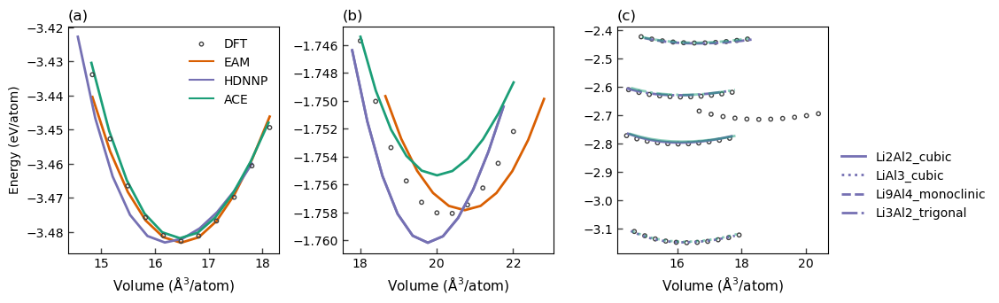
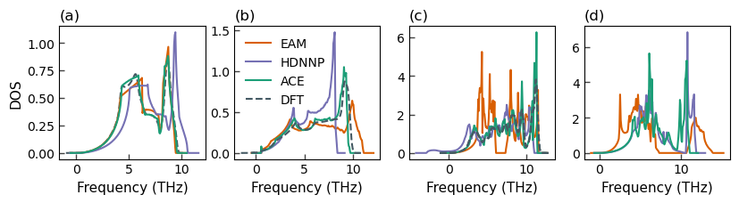
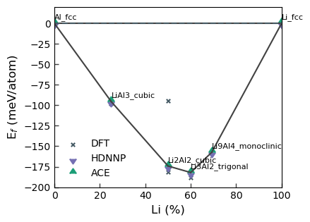

import numpy as np
import matplotlib.pylab as plt
import time
from helper import get_clean_project_name
from pyiron_atomistics import Project
from pyiron_atomistics.atomistics.structure.atoms import ase_to_pyiron, pyiron_to_ase
import pyiron_gpl
import seaborn as sns
import pandas as pd
from pychromatic import Multiplot
from pychromatic.colors import accent
colors = {"g": "#1b9e77", "r": "#d95f02", "b": "#7570b3"}
pr = Project("validation_LiAl2")
struct_dict = dict()
# structures to be generated automatically
struct_dict["Al"] = dict()
struct_dict["Al"]["s_murn"] = ["fcc", "bcc"]
struct_dict["Al"]["a"] = 4.04
struct_dict["Li"] = dict()
struct_dict["Li"]["s_murn"] = ["bcc", "fcc"]
struct_dict["Li"]["a"] = 3.5
# structures to be read from file
struct_dict["Li2Al2"] = dict()
struct_dict["Li2Al2"]["s_murn"] = ["Li2Al2_cubic"]
struct_dict["LiAl3"] = dict()
struct_dict["LiAl3"]["s_murn"] = ["LiAl3_cubic"]
struct_dict["Li9Al4"] = dict()
struct_dict["Li9Al4"]["s_murn"] = ["Li9Al4_monoclinic"]
struct_dict["Li3Al2"] = dict()
struct_dict["Li3Al2"]["s_murn"] = ["Li3Al2_trigonal"]
struct_dict
{'Al': {'s_murn': ['fcc', 'bcc'], 'a': 4.04},
'Li': {'s_murn': ['bcc', 'fcc'], 'a': 3.5},
'Li2Al2': {'s_murn': ['Li2Al2_cubic']},
'LiAl3': {'s_murn': ['LiAl3_cubic']},
'Li9Al4': {'s_murn': ['Li9Al4_monoclinic']},
'Li3Al2': {'s_murn': ['Li3Al2_trigonal']}}
fl_dict = {"Li2Al2_cubic": "mp_structures/LiAl_mp-1067_primitive.cif",
"LiAl3_cubic":"mp_structures/LiAl3_mp-10890_primitive.cif",
"Li9Al4_monoclinic":"mp_structures/Li9Al4_mp-568404_primitive.cif",
"Li3Al2_trigonal":"mp_structures/Al2Li3-6021.cif"}
potentials_list = ['AlLi-eam', 'AlLi-hdnnp', 'AlLi-ace']
for pot in potentials_list:
with pr.open(get_clean_project_name(pot)) as pr_pot:
print(pr_pot)
for compound, compound_dict in struct_dict.items():
for crys_structure in compound_dict["s_murn"]:
# Relax structure
if crys_structure in ["fcc","bcc"]:
basis = pr_pot.create_ase_bulk(compound, crys_structure, a=compound_dict["a"])
else:
basis = pr_pot.create.structure.ase.read(fl_dict[crys_structure])
job_relax = pr_pot.create_job(pr_pot.job_type.Lammps, f"{compound}_{crys_structure}_relax", delete_existing_job=True)
job_relax.structure = basis
job_relax.potential = pot
job_relax.calc_minimize(pressure=0)
job_relax.run()
# Murnaghan
job_ref = pr_pot.create_job(pr_pot.job_type.Lammps, f"ref_job_{compound}_{crys_structure}")
job_ref.structure = job_relax.get_structure(-1)
job_ref.potential = pot
job_ref.calc_minimize()
murn_job = job_ref.create_job(pr_pot.job_type.Murnaghan, f"murn_job_{compound}_{crys_structure}")
murn_job.input["vol_range"] = 0.1
murn_job.run()
/mnt/c/Users/menon/Documents/winrepos/projects-workshops/potentials-workshop-2022/validation/validation_LiAl2/AlLi_eam/
/tmp/ipykernel_303/4075279773.py:9: DeprecationWarning: pyiron_atomistics.project.create_ase_bulk is deprecated: Use create.structure.bulk instead.
basis = pr_pot.create_ase_bulk(compound, crys_structure, a=compound_dict["a"])
The job Al_fcc_relax was saved and received the ID: 1562
The job murn_job_Al_fcc was saved and received the ID: 1563
The job murn_job_Al_fcc_0_9 was saved and received the ID: 1564
The job murn_job_Al_fcc_0_92 was saved and received the ID: 1565
The job murn_job_Al_fcc_0_94 was saved and received the ID: 1566
The job murn_job_Al_fcc_0_96 was saved and received the ID: 1567
The job murn_job_Al_fcc_0_98 was saved and received the ID: 1568
The job murn_job_Al_fcc_1_0 was saved and received the ID: 1569
The job murn_job_Al_fcc_1_02 was saved and received the ID: 1570
The job murn_job_Al_fcc_1_04 was saved and received the ID: 1571
The job murn_job_Al_fcc_1_06 was saved and received the ID: 1572
The job murn_job_Al_fcc_1_08 was saved and received the ID: 1573
The job murn_job_Al_fcc_1_1 was saved and received the ID: 1574
/tmp/ipykernel_303/4075279773.py:9: DeprecationWarning: pyiron_atomistics.project.create_ase_bulk is deprecated: Use create.structure.bulk instead.
basis = pr_pot.create_ase_bulk(compound, crys_structure, a=compound_dict["a"])
The job Al_bcc_relax was saved and received the ID: 1575
The job murn_job_Al_bcc was saved and received the ID: 1576
The job murn_job_Al_bcc_0_9 was saved and received the ID: 1577
The job murn_job_Al_bcc_0_92 was saved and received the ID: 1578
The job murn_job_Al_bcc_0_94 was saved and received the ID: 1579
The job murn_job_Al_bcc_0_96 was saved and received the ID: 1580
The job murn_job_Al_bcc_0_98 was saved and received the ID: 1581
The job murn_job_Al_bcc_1_0 was saved and received the ID: 1582
The job murn_job_Al_bcc_1_02 was saved and received the ID: 1583
The job murn_job_Al_bcc_1_04 was saved and received the ID: 1584
The job murn_job_Al_bcc_1_06 was saved and received the ID: 1585
The job murn_job_Al_bcc_1_08 was saved and received the ID: 1586
The job murn_job_Al_bcc_1_1 was saved and received the ID: 1587
/tmp/ipykernel_303/4075279773.py:9: DeprecationWarning: pyiron_atomistics.project.create_ase_bulk is deprecated: Use create.structure.bulk instead.
basis = pr_pot.create_ase_bulk(compound, crys_structure, a=compound_dict["a"])
The job Li_bcc_relax was saved and received the ID: 1588
The job murn_job_Li_bcc was saved and received the ID: 1589
The job murn_job_Li_bcc_0_9 was saved and received the ID: 1590
The job murn_job_Li_bcc_0_92 was saved and received the ID: 1591
The job murn_job_Li_bcc_0_94 was saved and received the ID: 1592
The job murn_job_Li_bcc_0_96 was saved and received the ID: 1593
The job murn_job_Li_bcc_0_98 was saved and received the ID: 1594
The job murn_job_Li_bcc_1_0 was saved and received the ID: 1595
The job murn_job_Li_bcc_1_02 was saved and received the ID: 1596
The job murn_job_Li_bcc_1_04 was saved and received the ID: 1597
The job murn_job_Li_bcc_1_06 was saved and received the ID: 1598
The job murn_job_Li_bcc_1_08 was saved and received the ID: 1599
The job murn_job_Li_bcc_1_1 was saved and received the ID: 1600
/tmp/ipykernel_303/4075279773.py:9: DeprecationWarning: pyiron_atomistics.project.create_ase_bulk is deprecated: Use create.structure.bulk instead.
basis = pr_pot.create_ase_bulk(compound, crys_structure, a=compound_dict["a"])
The job Li_fcc_relax was saved and received the ID: 1601
The job murn_job_Li_fcc was saved and received the ID: 1602
The job murn_job_Li_fcc_0_9 was saved and received the ID: 1603
The job murn_job_Li_fcc_0_92 was saved and received the ID: 1604
The job murn_job_Li_fcc_0_94 was saved and received the ID: 1605
The job murn_job_Li_fcc_0_96 was saved and received the ID: 1606
The job murn_job_Li_fcc_0_98 was saved and received the ID: 1607
The job murn_job_Li_fcc_1_0 was saved and received the ID: 1608
The job murn_job_Li_fcc_1_02 was saved and received the ID: 1609
The job murn_job_Li_fcc_1_04 was saved and received the ID: 1610
The job murn_job_Li_fcc_1_06 was saved and received the ID: 1611
The job murn_job_Li_fcc_1_08 was saved and received the ID: 1612
The job murn_job_Li_fcc_1_1 was saved and received the ID: 1613
The job Li2Al2_Li2Al2_cubic_relax was saved and received the ID: 1614
The job murn_job_Li2Al2_Li2Al2_cubic was saved and received the ID: 1615
The job murn_job_Li2Al2_Li2Al2_cubic_0_9 was saved and received the ID: 1616
The job murn_job_Li2Al2_Li2Al2_cubic_0_92 was saved and received the ID: 1617
The job murn_job_Li2Al2_Li2Al2_cubic_0_94 was saved and received the ID: 1618
The job murn_job_Li2Al2_Li2Al2_cubic_0_96 was saved and received the ID: 1619
The job murn_job_Li2Al2_Li2Al2_cubic_0_98 was saved and received the ID: 1620
The job murn_job_Li2Al2_Li2Al2_cubic_1_0 was saved and received the ID: 1621
The job murn_job_Li2Al2_Li2Al2_cubic_1_02 was saved and received the ID: 1622
The job murn_job_Li2Al2_Li2Al2_cubic_1_04 was saved and received the ID: 1623
The job murn_job_Li2Al2_Li2Al2_cubic_1_06 was saved and received the ID: 1624
The job murn_job_Li2Al2_Li2Al2_cubic_1_08 was saved and received the ID: 1625
The job murn_job_Li2Al2_Li2Al2_cubic_1_1 was saved and received the ID: 1626
The job LiAl3_LiAl3_cubic_relax was saved and received the ID: 1627
The job murn_job_LiAl3_LiAl3_cubic was saved and received the ID: 1628
The job murn_job_LiAl3_LiAl3_cubic_0_9 was saved and received the ID: 1629
The job murn_job_LiAl3_LiAl3_cubic_0_92 was saved and received the ID: 1630
The job murn_job_LiAl3_LiAl3_cubic_0_94 was saved and received the ID: 1631
The job murn_job_LiAl3_LiAl3_cubic_0_96 was saved and received the ID: 1632
The job murn_job_LiAl3_LiAl3_cubic_0_98 was saved and received the ID: 1633
The job murn_job_LiAl3_LiAl3_cubic_1_0 was saved and received the ID: 1634
The job murn_job_LiAl3_LiAl3_cubic_1_02 was saved and received the ID: 1635
The job murn_job_LiAl3_LiAl3_cubic_1_04 was saved and received the ID: 1636
The job murn_job_LiAl3_LiAl3_cubic_1_06 was saved and received the ID: 1637
The job murn_job_LiAl3_LiAl3_cubic_1_08 was saved and received the ID: 1638
The job murn_job_LiAl3_LiAl3_cubic_1_1 was saved and received the ID: 1639
The job Li9Al4_Li9Al4_monoclinic_relax was saved and received the ID: 1640
The job murn_job_Li9Al4_Li9Al4_monoclinic was saved and received the ID: 1641
The job murn_job_Li9Al4_Li9Al4_monoclinic_0_9 was saved and received the ID: 1642
The job murn_job_Li9Al4_Li9Al4_monoclinic_0_92 was saved and received the ID: 1643
The job murn_job_Li9Al4_Li9Al4_monoclinic_0_94 was saved and received the ID: 1644
The job murn_job_Li9Al4_Li9Al4_monoclinic_0_96 was saved and received the ID: 1645
The job murn_job_Li9Al4_Li9Al4_monoclinic_0_98 was saved and received the ID: 1646
The job murn_job_Li9Al4_Li9Al4_monoclinic_1_0 was saved and received the ID: 1647
The job murn_job_Li9Al4_Li9Al4_monoclinic_1_02 was saved and received the ID: 1648
The job murn_job_Li9Al4_Li9Al4_monoclinic_1_04 was saved and received the ID: 1649
The job murn_job_Li9Al4_Li9Al4_monoclinic_1_06 was saved and received the ID: 1650
The job murn_job_Li9Al4_Li9Al4_monoclinic_1_08 was saved and received the ID: 1651
The job murn_job_Li9Al4_Li9Al4_monoclinic_1_1 was saved and received the ID: 1652
The job Li3Al2_Li3Al2_trigonal_relax was saved and received the ID: 1653
The job murn_job_Li3Al2_Li3Al2_trigonal was saved and received the ID: 1654
The job murn_job_Li3Al2_Li3Al2_trigonal_0_9 was saved and received the ID: 1655
The job murn_job_Li3Al2_Li3Al2_trigonal_0_92 was saved and received the ID: 1656
The job murn_job_Li3Al2_Li3Al2_trigonal_0_94 was saved and received the ID: 1657
The job murn_job_Li3Al2_Li3Al2_trigonal_0_96 was saved and received the ID: 1658
The job murn_job_Li3Al2_Li3Al2_trigonal_0_98 was saved and received the ID: 1659
The job murn_job_Li3Al2_Li3Al2_trigonal_1_0 was saved and received the ID: 1660
The job murn_job_Li3Al2_Li3Al2_trigonal_1_02 was saved and received the ID: 1661
The job murn_job_Li3Al2_Li3Al2_trigonal_1_04 was saved and received the ID: 1662
The job murn_job_Li3Al2_Li3Al2_trigonal_1_06 was saved and received the ID: 1663
The job murn_job_Li3Al2_Li3Al2_trigonal_1_08 was saved and received the ID: 1664
The job murn_job_Li3Al2_Li3Al2_trigonal_1_1 was saved and received the ID: 1665
/mnt/c/Users/menon/Documents/winrepos/projects-workshops/potentials-workshop-2022/validation/validation_LiAl2/AlLi_hdnnp/
/tmp/ipykernel_303/4075279773.py:9: DeprecationWarning: pyiron_atomistics.project.create_ase_bulk is deprecated: Use create.structure.bulk instead.
basis = pr_pot.create_ase_bulk(compound, crys_structure, a=compound_dict["a"])
The job Al_fcc_relax was saved and received the ID: 1666
The job murn_job_Al_fcc was saved and received the ID: 1667
The job murn_job_Al_fcc_0_9 was saved and received the ID: 1668
The job murn_job_Al_fcc_0_92 was saved and received the ID: 1669
The job murn_job_Al_fcc_0_94 was saved and received the ID: 1670
The job murn_job_Al_fcc_0_96 was saved and received the ID: 1671
The job murn_job_Al_fcc_0_98 was saved and received the ID: 1672
The job murn_job_Al_fcc_1_0 was saved and received the ID: 1673
The job murn_job_Al_fcc_1_02 was saved and received the ID: 1674
The job murn_job_Al_fcc_1_04 was saved and received the ID: 1675
The job murn_job_Al_fcc_1_06 was saved and received the ID: 1676
The job murn_job_Al_fcc_1_08 was saved and received the ID: 1677
The job murn_job_Al_fcc_1_1 was saved and received the ID: 1678
/tmp/ipykernel_303/4075279773.py:9: DeprecationWarning: pyiron_atomistics.project.create_ase_bulk is deprecated: Use create.structure.bulk instead.
basis = pr_pot.create_ase_bulk(compound, crys_structure, a=compound_dict["a"])
The job Al_bcc_relax was saved and received the ID: 1679
The job murn_job_Al_bcc was saved and received the ID: 1680
The job murn_job_Al_bcc_0_9 was saved and received the ID: 1681
The job murn_job_Al_bcc_0_92 was saved and received the ID: 1682
The job murn_job_Al_bcc_0_94 was saved and received the ID: 1683
The job murn_job_Al_bcc_0_96 was saved and received the ID: 1684
The job murn_job_Al_bcc_0_98 was saved and received the ID: 1685
The job murn_job_Al_bcc_1_0 was saved and received the ID: 1686
The job murn_job_Al_bcc_1_02 was saved and received the ID: 1687
The job murn_job_Al_bcc_1_04 was saved and received the ID: 1688
The job murn_job_Al_bcc_1_06 was saved and received the ID: 1689
The job murn_job_Al_bcc_1_08 was saved and received the ID: 1690
The job murn_job_Al_bcc_1_1 was saved and received the ID: 1691
/tmp/ipykernel_303/4075279773.py:9: DeprecationWarning: pyiron_atomistics.project.create_ase_bulk is deprecated: Use create.structure.bulk instead.
basis = pr_pot.create_ase_bulk(compound, crys_structure, a=compound_dict["a"])
The job Li_bcc_relax was saved and received the ID: 1692
The job murn_job_Li_bcc was saved and received the ID: 1693
The job murn_job_Li_bcc_0_9 was saved and received the ID: 1694
The job murn_job_Li_bcc_0_92 was saved and received the ID: 1695
The job murn_job_Li_bcc_0_94 was saved and received the ID: 1696
The job murn_job_Li_bcc_0_96 was saved and received the ID: 1697
The job murn_job_Li_bcc_0_98 was saved and received the ID: 1698
The job murn_job_Li_bcc_1_0 was saved and received the ID: 1699
The job murn_job_Li_bcc_1_02 was saved and received the ID: 1700
The job murn_job_Li_bcc_1_04 was saved and received the ID: 1701
The job murn_job_Li_bcc_1_06 was saved and received the ID: 1702
The job murn_job_Li_bcc_1_08 was saved and received the ID: 1703
The job murn_job_Li_bcc_1_1 was saved and received the ID: 1704
/tmp/ipykernel_303/4075279773.py:9: DeprecationWarning: pyiron_atomistics.project.create_ase_bulk is deprecated: Use create.structure.bulk instead.
basis = pr_pot.create_ase_bulk(compound, crys_structure, a=compound_dict["a"])
The job Li_fcc_relax was saved and received the ID: 1705
The job murn_job_Li_fcc was saved and received the ID: 1706
The job murn_job_Li_fcc_0_9 was saved and received the ID: 1707
The job murn_job_Li_fcc_0_92 was saved and received the ID: 1708
The job murn_job_Li_fcc_0_94 was saved and received the ID: 1709
The job murn_job_Li_fcc_0_96 was saved and received the ID: 1710
The job murn_job_Li_fcc_0_98 was saved and received the ID: 1711
The job murn_job_Li_fcc_1_0 was saved and received the ID: 1712
The job murn_job_Li_fcc_1_02 was saved and received the ID: 1713
The job murn_job_Li_fcc_1_04 was saved and received the ID: 1714
The job murn_job_Li_fcc_1_06 was saved and received the ID: 1715
The job murn_job_Li_fcc_1_08 was saved and received the ID: 1716
The job murn_job_Li_fcc_1_1 was saved and received the ID: 1717
The job Li2Al2_Li2Al2_cubic_relax was saved and received the ID: 1718
The job murn_job_Li2Al2_Li2Al2_cubic was saved and received the ID: 1719
The job murn_job_Li2Al2_Li2Al2_cubic_0_9 was saved and received the ID: 1720
The job murn_job_Li2Al2_Li2Al2_cubic_0_92 was saved and received the ID: 1721
The job murn_job_Li2Al2_Li2Al2_cubic_0_94 was saved and received the ID: 1722
The job murn_job_Li2Al2_Li2Al2_cubic_0_96 was saved and received the ID: 1723
The job murn_job_Li2Al2_Li2Al2_cubic_0_98 was saved and received the ID: 1724
The job murn_job_Li2Al2_Li2Al2_cubic_1_0 was saved and received the ID: 1725
The job murn_job_Li2Al2_Li2Al2_cubic_1_02 was saved and received the ID: 1726
The job murn_job_Li2Al2_Li2Al2_cubic_1_04 was saved and received the ID: 1727
The job murn_job_Li2Al2_Li2Al2_cubic_1_06 was saved and received the ID: 1728
The job murn_job_Li2Al2_Li2Al2_cubic_1_08 was saved and received the ID: 1729
The job murn_job_Li2Al2_Li2Al2_cubic_1_1 was saved and received the ID: 1730
The job LiAl3_LiAl3_cubic_relax was saved and received the ID: 1731
The job murn_job_LiAl3_LiAl3_cubic was saved and received the ID: 1732
The job murn_job_LiAl3_LiAl3_cubic_0_9 was saved and received the ID: 1733
The job murn_job_LiAl3_LiAl3_cubic_0_92 was saved and received the ID: 1734
The job murn_job_LiAl3_LiAl3_cubic_0_94 was saved and received the ID: 1735
The job murn_job_LiAl3_LiAl3_cubic_0_96 was saved and received the ID: 1736
The job murn_job_LiAl3_LiAl3_cubic_0_98 was saved and received the ID: 1737
The job murn_job_LiAl3_LiAl3_cubic_1_0 was saved and received the ID: 1738
The job murn_job_LiAl3_LiAl3_cubic_1_02 was saved and received the ID: 1739
The job murn_job_LiAl3_LiAl3_cubic_1_04 was saved and received the ID: 1740
The job murn_job_LiAl3_LiAl3_cubic_1_06 was saved and received the ID: 1741
The job murn_job_LiAl3_LiAl3_cubic_1_08 was saved and received the ID: 1742
The job murn_job_LiAl3_LiAl3_cubic_1_1 was saved and received the ID: 1743
The job Li9Al4_Li9Al4_monoclinic_relax was saved and received the ID: 1744
The job murn_job_Li9Al4_Li9Al4_monoclinic was saved and received the ID: 1745
The job murn_job_Li9Al4_Li9Al4_monoclinic_0_9 was saved and received the ID: 1746
The job murn_job_Li9Al4_Li9Al4_monoclinic_0_92 was saved and received the ID: 1747
The job murn_job_Li9Al4_Li9Al4_monoclinic_0_94 was saved and received the ID: 1748
The job murn_job_Li9Al4_Li9Al4_monoclinic_0_96 was saved and received the ID: 1749
The job murn_job_Li9Al4_Li9Al4_monoclinic_0_98 was saved and received the ID: 1750
The job murn_job_Li9Al4_Li9Al4_monoclinic_1_0 was saved and received the ID: 1751
The job murn_job_Li9Al4_Li9Al4_monoclinic_1_02 was saved and received the ID: 1752
The job murn_job_Li9Al4_Li9Al4_monoclinic_1_04 was saved and received the ID: 1753
The job murn_job_Li9Al4_Li9Al4_monoclinic_1_06 was saved and received the ID: 1754
The job murn_job_Li9Al4_Li9Al4_monoclinic_1_08 was saved and received the ID: 1755
The job murn_job_Li9Al4_Li9Al4_monoclinic_1_1 was saved and received the ID: 1756
The job Li3Al2_Li3Al2_trigonal_relax was saved and received the ID: 1757
The job murn_job_Li3Al2_Li3Al2_trigonal was saved and received the ID: 1758
The job murn_job_Li3Al2_Li3Al2_trigonal_0_9 was saved and received the ID: 1759
The job murn_job_Li3Al2_Li3Al2_trigonal_0_92 was saved and received the ID: 1760
The job murn_job_Li3Al2_Li3Al2_trigonal_0_94 was saved and received the ID: 1761
The job murn_job_Li3Al2_Li3Al2_trigonal_0_96 was saved and received the ID: 1762
The job murn_job_Li3Al2_Li3Al2_trigonal_0_98 was saved and received the ID: 1763
The job murn_job_Li3Al2_Li3Al2_trigonal_1_0 was saved and received the ID: 1764
The job murn_job_Li3Al2_Li3Al2_trigonal_1_02 was saved and received the ID: 1765
The job murn_job_Li3Al2_Li3Al2_trigonal_1_04 was saved and received the ID: 1766
The job murn_job_Li3Al2_Li3Al2_trigonal_1_06 was saved and received the ID: 1767
The job murn_job_Li3Al2_Li3Al2_trigonal_1_08 was saved and received the ID: 1768
The job murn_job_Li3Al2_Li3Al2_trigonal_1_1 was saved and received the ID: 1769
/mnt/c/Users/menon/Documents/winrepos/projects-workshops/potentials-workshop-2022/validation/validation_LiAl2/AlLi_ace/
/tmp/ipykernel_303/4075279773.py:9: DeprecationWarning: pyiron_atomistics.project.create_ase_bulk is deprecated: Use create.structure.bulk instead.
basis = pr_pot.create_ase_bulk(compound, crys_structure, a=compound_dict["a"])
The job Al_fcc_relax was saved and received the ID: 1770
The job murn_job_Al_fcc was saved and received the ID: 1771
The job murn_job_Al_fcc_0_9 was saved and received the ID: 1772
The job murn_job_Al_fcc_0_92 was saved and received the ID: 1773
The job murn_job_Al_fcc_0_94 was saved and received the ID: 1774
The job murn_job_Al_fcc_0_96 was saved and received the ID: 1775
The job murn_job_Al_fcc_0_98 was saved and received the ID: 1776
The job murn_job_Al_fcc_1_0 was saved and received the ID: 1777
The job murn_job_Al_fcc_1_02 was saved and received the ID: 1778
The job murn_job_Al_fcc_1_04 was saved and received the ID: 1779
The job murn_job_Al_fcc_1_06 was saved and received the ID: 1780
The job murn_job_Al_fcc_1_08 was saved and received the ID: 1781
The job murn_job_Al_fcc_1_1 was saved and received the ID: 1782
/tmp/ipykernel_303/4075279773.py:9: DeprecationWarning: pyiron_atomistics.project.create_ase_bulk is deprecated: Use create.structure.bulk instead.
basis = pr_pot.create_ase_bulk(compound, crys_structure, a=compound_dict["a"])
The job Al_bcc_relax was saved and received the ID: 1783
The job murn_job_Al_bcc was saved and received the ID: 1784
The job murn_job_Al_bcc_0_9 was saved and received the ID: 1785
The job murn_job_Al_bcc_0_92 was saved and received the ID: 1786
The job murn_job_Al_bcc_0_94 was saved and received the ID: 1787
The job murn_job_Al_bcc_0_96 was saved and received the ID: 1788
The job murn_job_Al_bcc_0_98 was saved and received the ID: 1789
The job murn_job_Al_bcc_1_0 was saved and received the ID: 1790
The job murn_job_Al_bcc_1_02 was saved and received the ID: 1791
The job murn_job_Al_bcc_1_04 was saved and received the ID: 1792
The job murn_job_Al_bcc_1_06 was saved and received the ID: 1793
The job murn_job_Al_bcc_1_08 was saved and received the ID: 1794
The job murn_job_Al_bcc_1_1 was saved and received the ID: 1795
/tmp/ipykernel_303/4075279773.py:9: DeprecationWarning: pyiron_atomistics.project.create_ase_bulk is deprecated: Use create.structure.bulk instead.
basis = pr_pot.create_ase_bulk(compound, crys_structure, a=compound_dict["a"])
The job Li_bcc_relax was saved and received the ID: 1796
The job murn_job_Li_bcc was saved and received the ID: 1797
The job murn_job_Li_bcc_0_9 was saved and received the ID: 1798
The job murn_job_Li_bcc_0_92 was saved and received the ID: 1799
The job murn_job_Li_bcc_0_94 was saved and received the ID: 1800
The job murn_job_Li_bcc_0_96 was saved and received the ID: 1801
The job murn_job_Li_bcc_0_98 was saved and received the ID: 1802
The job murn_job_Li_bcc_1_0 was saved and received the ID: 1803
The job murn_job_Li_bcc_1_02 was saved and received the ID: 1804
The job murn_job_Li_bcc_1_04 was saved and received the ID: 1805
The job murn_job_Li_bcc_1_06 was saved and received the ID: 1806
The job murn_job_Li_bcc_1_08 was saved and received the ID: 1807
The job murn_job_Li_bcc_1_1 was saved and received the ID: 1808
/tmp/ipykernel_303/4075279773.py:9: DeprecationWarning: pyiron_atomistics.project.create_ase_bulk is deprecated: Use create.structure.bulk instead.
basis = pr_pot.create_ase_bulk(compound, crys_structure, a=compound_dict["a"])
The job Li_fcc_relax was saved and received the ID: 1809
The job murn_job_Li_fcc was saved and received the ID: 1810
The job murn_job_Li_fcc_0_9 was saved and received the ID: 1811
The job murn_job_Li_fcc_0_92 was saved and received the ID: 1812
The job murn_job_Li_fcc_0_94 was saved and received the ID: 1813
The job murn_job_Li_fcc_0_96 was saved and received the ID: 1814
The job murn_job_Li_fcc_0_98 was saved and received the ID: 1815
The job murn_job_Li_fcc_1_0 was saved and received the ID: 1816
The job murn_job_Li_fcc_1_02 was saved and received the ID: 1817
The job murn_job_Li_fcc_1_04 was saved and received the ID: 1818
The job murn_job_Li_fcc_1_06 was saved and received the ID: 1819
The job murn_job_Li_fcc_1_08 was saved and received the ID: 1820
The job murn_job_Li_fcc_1_1 was saved and received the ID: 1821
The job Li2Al2_Li2Al2_cubic_relax was saved and received the ID: 1822
The job murn_job_Li2Al2_Li2Al2_cubic was saved and received the ID: 1823
The job murn_job_Li2Al2_Li2Al2_cubic_0_9 was saved and received the ID: 1824
The job murn_job_Li2Al2_Li2Al2_cubic_0_92 was saved and received the ID: 1825
The job murn_job_Li2Al2_Li2Al2_cubic_0_94 was saved and received the ID: 1826
The job murn_job_Li2Al2_Li2Al2_cubic_0_96 was saved and received the ID: 1827
The job murn_job_Li2Al2_Li2Al2_cubic_0_98 was saved and received the ID: 1828
The job murn_job_Li2Al2_Li2Al2_cubic_1_0 was saved and received the ID: 1829
The job murn_job_Li2Al2_Li2Al2_cubic_1_02 was saved and received the ID: 1830
The job murn_job_Li2Al2_Li2Al2_cubic_1_04 was saved and received the ID: 1831
The job murn_job_Li2Al2_Li2Al2_cubic_1_06 was saved and received the ID: 1832
The job murn_job_Li2Al2_Li2Al2_cubic_1_08 was saved and received the ID: 1833
The job murn_job_Li2Al2_Li2Al2_cubic_1_1 was saved and received the ID: 1834
The job LiAl3_LiAl3_cubic_relax was saved and received the ID: 1835
The job murn_job_LiAl3_LiAl3_cubic was saved and received the ID: 1836
The job murn_job_LiAl3_LiAl3_cubic_0_9 was saved and received the ID: 1837
The job murn_job_LiAl3_LiAl3_cubic_0_92 was saved and received the ID: 1838
The job murn_job_LiAl3_LiAl3_cubic_0_94 was saved and received the ID: 1839
The job murn_job_LiAl3_LiAl3_cubic_0_96 was saved and received the ID: 1840
The job murn_job_LiAl3_LiAl3_cubic_0_98 was saved and received the ID: 1841
The job murn_job_LiAl3_LiAl3_cubic_1_0 was saved and received the ID: 1842
The job murn_job_LiAl3_LiAl3_cubic_1_02 was saved and received the ID: 1843
The job murn_job_LiAl3_LiAl3_cubic_1_04 was saved and received the ID: 1844
The job murn_job_LiAl3_LiAl3_cubic_1_06 was saved and received the ID: 1845
The job murn_job_LiAl3_LiAl3_cubic_1_08 was saved and received the ID: 1846
The job murn_job_LiAl3_LiAl3_cubic_1_1 was saved and received the ID: 1847
The job Li9Al4_Li9Al4_monoclinic_relax was saved and received the ID: 1848
The job murn_job_Li9Al4_Li9Al4_monoclinic was saved and received the ID: 1849
The job murn_job_Li9Al4_Li9Al4_monoclinic_0_9 was saved and received the ID: 1850
The job murn_job_Li9Al4_Li9Al4_monoclinic_0_92 was saved and received the ID: 1851
The job murn_job_Li9Al4_Li9Al4_monoclinic_0_94 was saved and received the ID: 1852
The job murn_job_Li9Al4_Li9Al4_monoclinic_0_96 was saved and received the ID: 1853
The job murn_job_Li9Al4_Li9Al4_monoclinic_0_98 was saved and received the ID: 1854
The job murn_job_Li9Al4_Li9Al4_monoclinic_1_0 was saved and received the ID: 1855
The job murn_job_Li9Al4_Li9Al4_monoclinic_1_02 was saved and received the ID: 1856
The job murn_job_Li9Al4_Li9Al4_monoclinic_1_04 was saved and received the ID: 1857
The job murn_job_Li9Al4_Li9Al4_monoclinic_1_06 was saved and received the ID: 1858
The job murn_job_Li9Al4_Li9Al4_monoclinic_1_08 was saved and received the ID: 1859
The job murn_job_Li9Al4_Li9Al4_monoclinic_1_1 was saved and received the ID: 1860
The job Li3Al2_Li3Al2_trigonal_relax was saved and received the ID: 1861
The job murn_job_Li3Al2_Li3Al2_trigonal was saved and received the ID: 1862
The job murn_job_Li3Al2_Li3Al2_trigonal_0_9 was saved and received the ID: 1863
The job murn_job_Li3Al2_Li3Al2_trigonal_0_92 was saved and received the ID: 1864
The job murn_job_Li3Al2_Li3Al2_trigonal_0_94 was saved and received the ID: 1865
The job murn_job_Li3Al2_Li3Al2_trigonal_0_96 was saved and received the ID: 1866
The job murn_job_Li3Al2_Li3Al2_trigonal_0_98 was saved and received the ID: 1867
The job murn_job_Li3Al2_Li3Al2_trigonal_1_0 was saved and received the ID: 1868
The job murn_job_Li3Al2_Li3Al2_trigonal_1_02 was saved and received the ID: 1869
The job murn_job_Li3Al2_Li3Al2_trigonal_1_04 was saved and received the ID: 1870
The job murn_job_Li3Al2_Li3Al2_trigonal_1_06 was saved and received the ID: 1871
The job murn_job_Li3Al2_Li3Al2_trigonal_1_08 was saved and received the ID: 1872
The job murn_job_Li3Al2_Li3Al2_trigonal_1_1 was saved and received the ID: 1873
# Only work with Murnaghan jobs
def get_only_murn(job_table):
return (job_table.hamilton == "Murnaghan") & (job_table.status == "finished")
def get_eq_vol(job_path):
return job_path["output/equilibrium_volume"]
def get_eq_lp(job_path):
return np.linalg.norm(job_path["output/structure/cell/cell"][0]) * np.sqrt(2)
def get_eq_bm(job_path):
return job_path["output/equilibrium_bulk_modulus"]
def get_potential(job_path):
return job_path.project.path.split("/")[-3]
def get_eq_energy(job_path):
return job_path["output/equilibrium_energy"]
def get_n_atoms(job_path):
return len(job_path["output/structure/positions"])
def get_ase_atoms(job_path):
return pyiron_to_ase(job_path.structure).copy()
def get_potential(job_path):
return job_path.project.path.split("/")[-2]
def get_crystal_structure(job_path):
return job_path.job_name.split("_")[-1]
def get_compound(job_path):
return job_path.job_name.split("_")[-2]
# Compile data using pyiron tables
table = pr.create_table("table_murn", delete_existing_job=True)
table.convert_to_object = True
table.db_filter_function = get_only_murn
table.add["potential"] = get_potential
table.add["ase_atoms"] = get_ase_atoms
table.add["compound"] = get_compound
table.add["crystal_structure"] = get_crystal_structure
table.add["a"] = get_eq_lp
table.add["eq_vol"] = get_eq_vol
table.add["eq_bm"] = get_eq_bm
table.add["eq_energy"] = get_eq_energy
table.add["n_atoms"] = get_n_atoms
table.run()
data_murn = table.get_dataframe()
data_murn["phase"] = data_murn.compound + "_" + data_murn.crystal_structure
The job table_murn was saved and received the ID: 1874
/home/menon/miniconda3/envs/potentials2023/lib/python3.10/site-packages/pyiron_base/jobs/datamining.py:636: PerformanceWarning:
your performance may suffer as PyTables will pickle object types that it cannot
map directly to c-types [inferred_type->mixed,key->block2_values] [items->Index(['potential', 'ase_atoms', 'compound', 'crystal_structure'], dtype='object')]
self.pyiron_table._df.to_hdf(
data_murn
| job_id | potential | ase_atoms | compound | crystal_structure | a | eq_vol | eq_bm | eq_energy | n_atoms | phase | |
|---|---|---|---|---|---|---|---|---|---|---|---|
| 0 | 1563 | AlLi_eam | (Atom('Al', [0.0, 0.0, 0.0], index=0)) | Al | fcc | 4.040003 | 16.476033 | 77.547271 | -3.483139 | 1 | Al_fcc |
| 1 | 1576 | AlLi_eam | (Atom('Al', [0.0, 0.0, 0.0], index=0)) | Al | bcc | 3.871488 | 15.795379 | 71.055726 | -3.410797 | 1 | Al_bcc |
| 2 | 1589 | AlLi_eam | (Atom('Li', [0.0, 0.0, 0.0], index=0)) | Li | bcc | 4.195477 | 20.125239 | 14.297189 | -1.757074 | 1 | Li_bcc |
| 3 | 1602 | AlLi_eam | (Atom('Li', [0.0, 0.0, 0.0], index=0)) | Li | fcc | 4.360986 | 20.731723 | 12.476249 | -1.757894 | 1 | Li_fcc |
| 4 | 1615 | AlLi_eam | (Atom('Li', [4.982325840580395, 2.8765471652483536, 2.0340260069503224], index=0), Atom('Li', [7.473488760872885, 4.314820747870893, 3.051039010425718], index=1), Atom('Al', [-4.53145385072325e-12... | Li2Al2 | cubic | 7.046073 | 87.529398 | 81.909721 | -11.499962 | 4 | Li2Al2_cubic |
| 5 | 1628 | AlLi_eam | (Atom('Li', [0.0, 0.0, 0.0], index=0), Atom('Al', [2.106874987963487, 2.106874987963487, 2.5801777102131027e-16], index=1), Atom('Al', [2.106874987963487, 1.2900888551065513e-16, 2.106874987963487... | LiAl3 | cubic | 5.959142 | 74.818210 | 79.201150 | -12.511418 | 4 | LiAl3_cubic |
| 6 | 1641 | AlLi_eam | (Atom('Li', [5.756928222907686, 1.1632127945634083, 0.9825939412049634], index=0), Atom('Li', [3.602056288430966, 1.6786975615946829, 3.146875971249968], index=1), Atom('Li', [-3.9692339282772395,... | Li9Al4 | monoclinic | 15.018222 | 292.387586 | 50.694127 | -31.917634 | 13 | Li9Al4_monoclinic |
| 7 | 1654 | AlLi_eam | (Atom('Al', [2.478732147692288, 1.4310976653077936, 2.172113377917639], index=0), Atom('Al', [-2.4787299535889, 4.293289857741875, 3.0348112984506437], index=1), Atom('Li', [9.9442149673587e-07, 1... | Li3Al2 | trigonal | 7.010910 | 110.938900 | 69.387897 | -13.300782 | 5 | Li3Al2_trigonal |
| 8 | 1667 | AlLi_hdnnp | (Atom('Al', [0.0, 0.0, 0.0], index=0)) | Al | fcc | 4.015285 | 16.239848 | 79.722479 | -3.483640 | 1 | Al_fcc |
| 9 | 1680 | AlLi_hdnnp | (Atom('Al', [0.0, 0.0, 0.0], index=0)) | Al | bcc | 3.956301 | 16.858766 | 94.252106 | -3.389178 | 1 | Al_bcc |
| 10 | 1693 | AlLi_hdnnp | (Atom('Li', [0.0, 0.0, 0.0], index=0)) | Li | bcc | 4.304145 | 21.683216 | 11.782073 | -1.760709 | 1 | Li_bcc |
| 11 | 1706 | AlLi_hdnnp | (Atom('Li', [0.0, 0.0, 0.0], index=0)) | Li | fcc | 4.292348 | 19.779369 | 19.053156 | -1.760145 | 1 | Li_fcc |
| 12 | 1719 | AlLi_hdnnp | (Atom('Li', [4.49748505780457, 2.59662420879972, 1.8360905862356112], index=0), Atom('Li', [6.746227586708631, 3.894936313198549, 2.754135879353], index=1), Atom('Al', [-2.045268969864441e-12, 1.4... | Li2Al2 | cubic | 6.360404 | 64.339882 | 54.079723 | -11.186353 | 4 | Li2Al2_cubic |
| 13 | 1732 | AlLi_hdnnp | (Atom('Li', [0.0, 0.0, 0.0], index=0), Atom('Al', [2.0073006275201934, 2.0073006275201934, 2.4582342884190786e-16], index=1), Atom('Al', [2.0073006275201934, 1.2291171442095393e-16, 2.007300627520... | LiAl3 | cubic | 5.677504 | 64.841662 | 61.778746 | -12.592512 | 4 | LiAl3_cubic |
| 14 | 1745 | AlLi_hdnnp | (Atom('Li', [5.182585402126616, 1.0587724518865667, 0.8132489518184662], index=0), Atom('Li', [3.287174227136958, 1.512189461192769, 2.750602715638137], index=1), Atom('Li', [-3.619398012664486, 3... | Li9Al4 | monoclinic | 13.588546 | 216.382480 | 31.213508 | -31.807569 | 13 | Li9Al4_monoclinic |
| 15 | 1758 | AlLi_hdnnp | (Atom('Al', [2.225040847134028, 1.2846288505758052, 1.9064545220317077], index=0), Atom('Al', [-2.2250388545245254, 3.85388366631039, 2.7675559827111167], index=1), Atom('Li', [8.701694346962879e-... | Li3Al2 | trigonal | 6.293363 | 80.168220 | 40.301939 | -13.148232 | 5 | Li3Al2_trigonal |
| 16 | 1771 | AlLi_ace | (Atom('Al', [0.0, 0.0, 0.0], index=0)) | Al | fcc | 4.038342 | 16.464346 | 82.985710 | -3.481992 | 1 | Al_fcc |
| 17 | 1784 | AlLi_ace | (Atom('Al', [0.0, 0.0, 0.0], index=0)) | Al | bcc | 3.952764 | 16.810024 | 72.318418 | -3.388443 | 1 | Al_bcc |
| 18 | 1797 | AlLi_ace | (Atom('Li', [0.0, 0.0, 0.0], index=0)) | Li | bcc | 4.236658 | 20.696341 | 12.643968 | -1.754260 | 1 | Li_bcc |
| 19 | 1810 | AlLi_ace | (Atom('Li', [0.0, 0.0, 0.0], index=0)) | Li | fcc | 4.309674 | 20.008953 | 13.287606 | -1.755380 | 1 | Li_fcc |
| 20 | 1823 | AlLi_ace | (Atom('Li', [4.504648304481104, 2.6007599111966933, 1.8390149694454816], index=0), Atom('Li', [6.75697245672524, 3.901139866792676, 2.758522454167805], index=1), Atom('Al', [-4.608122387264258e-12... | Li2Al2 | cubic | 6.370535 | 64.636638 | 46.347619 | -11.171395 | 4 | Li2Al2_cubic |
| 21 | 1836 | AlLi_ace | (Atom('Li', [0.0, 0.0, 0.0], index=0), Atom('Al', [2.0095753718905467, 2.0095753718905467, 2.46102004683111e-16], index=1), Atom('Al', [2.0095753718905467, 1.230510023415555e-16, 2.009575371890546... | LiAl3 | cubic | 5.683937 | 64.917353 | 62.920819 | -12.583433 | 4 | LiAl3_cubic |
| 22 | 1849 | AlLi_ace | (Atom('Li', [5.156877971588094, 1.0608649917976432, 0.8204402917305339], index=0), Atom('Li', [3.2816564071201406, 1.5094522771144112, 2.722563215733808], index=1), Atom('Li', [-3.6132937856492795... | Li9Al4 | monoclinic | 13.564561 | 215.240666 | 33.692785 | -31.773477 | 13 | Li9Al4_monoclinic |
| 23 | 1862 | AlLi_ace | (Atom('Al', [2.231877159464297, 1.2885773974757686, 1.908439000058924], index=0), Atom('Al', [-2.231875108200433, 3.8657297837385007, 2.7799383085913876], index=1), Atom('Li', [8.205868358485434e-... | Li3Al2 | trigonal | 6.312708 | 80.900320 | 42.025117 | -13.140764 | 5 | Li3Al2_trigonal |
df_dft_ref
| name | energy | vol | compound | number_of_atoms | |
|---|---|---|---|---|---|
| 0 | /home/users/lysogy36/tools/VASP/Al-Li/DFT/LiAl_mp-1079240/murn/strain_1_02/data.json | -21.708879 | 18.907780 | LiAl_mp-1079240 | 8 |
| 1 | /home/users/lysogy36/tools/VASP/Al-Li/DFT/LiAl_mp-1079240__221/shake4/murn/strain_1_1/data.json | -84.273294 | 22.352820 | LiAl_mp-1079240__221 | 32 |
| 2 | /home/users/lysogy36/tools/VASP/Al-Li/DFT/LiAl_mp-1067__222/shake4/murn/strain_1_04/data.json | -87.493709 | 18.244104 | LiAl_mp-1067__222 | 32 |
| 3 | /home/users/lysogy36/tools/VASP/Al-Li/DFT/LiAl_mp-1079240__221/shake4/murn/strain_1_02/data.json | -85.324225 | 20.727161 | LiAl_mp-1079240__221 | 32 |
| 4 | /home/users/lysogy36/tools/VASP/Al-Li/DFT/LiAl_mp-1191737__112/shake2/murn/strain_1_1/data.json | -118.672546 | 25.266947 | LiAl_mp-1191737__112 | 48 |
| ... | ... | ... | ... | ... | ... |
| 600 | Li_fcc_murn_06 | -7.032308 | 20.407972 | Li_fcc | 4 |
| 601 | Li_fcc_murn_07 | -7.029867 | 20.808128 | Li_fcc | 4 |
| 602 | Li_fcc_murn_08 | -7.025015 | 21.208284 | Li_fcc | 4 |
| 603 | Li_fcc_murn_09 | -7.017952 | 21.608440 | Li_fcc | 4 |
| 604 | Li_fcc_murn_10 | -7.008833 | 22.008597 | Li_fcc | 4 |
605 rows × 5 columns
df_dft_ref = pd.read_pickle("dft_ref.pckl")
al_fcc = df_dft_ref[df_dft_ref["compound"]=="Al_fcc"]
li = df_dft_ref[df_dft_ref["compound"].isin(["Li_bcc","Li_fcc"])]
df_mixed = df_dft_ref[df_dft_ref["compound"].isin(["LiAl_mp-1067","LiAl3_mp-10890","Li9Al4_mp-568404","Li3Al2_mp-16506","LiAl_mp-1079240"])]
li["energy_per_atom"] = li["energy"]/li["number_of_atoms"]
# li
mlt = Multiplot(columns=3, width=800, ratio=0.3, wspace=0.3)
#--------------------------------------------------------
pot = "AlLi_eam"
mask1 = data_murn["compound"]=="Al"
data1 = data_murn[(data_murn.potential == get_clean_project_name(pot)) & (mask1)]
mask2 = data_murn["compound"]=="Li"
data2 = data_murn[(data_murn.potential == get_clean_project_name(pot)) & (mask2)]
mask3 = data_murn["compound"].isin(["Al","Li"])
data3 = data_murn[(data_murn.potential == get_clean_project_name(pot)) & (~mask3)]
data1 = data1[data1["crystal_structure"] == "fcc"]
for j,(_, row) in enumerate(data1.iterrows()):
murn_job = pr.load(row["job_id"])
murn_df = murn_job.output_to_pandas()
n_atoms = row["n_atoms"]
#if row
mlt[0,0].plot(murn_df["volume"]/n_atoms, murn_df["energy"]/n_atoms,"-",
lw=2,
color=colors["r"])
data2 = data2[data2["crystal_structure"] == "fcc"]
for j,(_, row) in enumerate(data2.iterrows()):
murn_job = pr.load(row["job_id"])
murn_df = murn_job.output_to_pandas()
n_atoms = row["n_atoms"]
mlt[0,1].plot(murn_df["volume"]/n_atoms, murn_df["energy"]/n_atoms,"-",
lw=2,
label= row["phase"],
color=colors['r'])
#--------------------------------------------------------------------------------------
#LEGENDS
mlt[0,0].scatter(al_fcc["vol"],al_fcc["energy"]/al_fcc["number_of_atoms"],
facecolor="none",edgecolor=accent["dgrey"],s=10, zorder=10)
lip = li[li['compound'] == 'Li_fcc']
mlt[0,1].scatter(lip["vol"],lip["energy"]/lip["number_of_atoms"],
facecolor="none", edgecolor=accent['dgrey'], s=10)
mlt[0,2].scatter(df_mixed["vol"],df_mixed["energy"]/df_mixed["number_of_atoms"],
facecolor="none",edgecolor=accent['dgrey'],s=10)
mlt[0,0].scatter([],[], facecolor="none",edgecolor=accent["dgrey"],s=10,label="DFT")
mlt[0,0].plot([],[], color=colors["r"], label="EAM")
mlt[0,0].plot([],[], color=colors["b"], label="HDNNP")
mlt[0,0].plot([],[], color=colors["g"], label="ACE")
#---------------------------------------------------------------------------------------
"""
Plot for HDNNP
"""
pot = "AlLi_hdnnp"
mask1 = data_murn["compound"]=="Al"
data1 = data_murn[(data_murn.potential == get_clean_project_name(pot)) & (mask1)]
mask2 = data_murn["compound"]=="Li"
data2 = data_murn[(data_murn.potential == get_clean_project_name(pot)) & (mask2)]
mask3 = data_murn["compound"].isin(["Al","Li"])
data3 = data_murn[(data_murn.potential == get_clean_project_name(pot)) & (~mask3)]
data1 = data1[data1["crystal_structure"] == "fcc"]
"""
Al plot
"""
for j,(_, row) in enumerate(data1.iterrows()):
murn_job = pr.load(row["job_id"])
murn_df = murn_job.output_to_pandas()
n_atoms = row["n_atoms"]
#if row
mlt[0,0].plot(murn_df["volume"]/n_atoms, murn_df["energy"]/n_atoms,"-",
lw=2,
color=colors["b"])
data2 = data2[data2["crystal_structure"] == "fcc"]
for j,(_, row) in enumerate(data2.iterrows()):
murn_job = pr.load(row["job_id"])
murn_df = murn_job.output_to_pandas()
n_atoms = row["n_atoms"]
#if row["phase"] == "Li2Al2_cubic":
mlt[0,1].plot(murn_df["volume"]/n_atoms, murn_df["energy"]/n_atoms,"-",
lw=2,
label= r"LiAl",
color=colors['b'])
#elif row["phase"] == "LiAl3_cubic":
mlt[0,1].plot(murn_df["volume"]/n_atoms, murn_df["energy"]/n_atoms,"-",
lw=2,
label= r"$\mathrm{Li}\mathrm{Al}_3$",
color=colors['b'])
"""
Li plot
"""
"""
Mixed plot
"""
ls = ['solid', 'dotted', 'dashed', 'dashdot', '--']
for j,(_, row) in enumerate(data3.iterrows()):
#print(j)
murn_job = pr.load(row["job_id"])
murn_df = murn_job.output_to_pandas()
n_atoms = row["n_atoms"]
mlt[0,2].plot(murn_df["volume"]/n_atoms, murn_df["energy"]/n_atoms,ls=ls[j],
lw=2,
color=colors["b"],
label= row["phase"],
)
# ax_list[i,1].legend(prop={"size":16})
#----------------------------------------------------------------------------------
#---------------------------------------------------------------------------------------
pot = "AlLi-ace"
mask1 = data_murn["compound"]=="Al"
data1 = data_murn[(data_murn.potential == get_clean_project_name(pot)) & (mask1)]
mask2 = data_murn["compound"]=="Li"
data2 = data_murn[(data_murn.potential == get_clean_project_name(pot)) & (mask2)]
mask3 = data_murn["compound"].isin(["Al","Li"])
data3 = data_murn[(data_murn.potential == get_clean_project_name(pot)) & (~mask3)]
data1 = data1[data1["crystal_structure"] == "fcc"]
for j,(_, row) in enumerate(data1.iterrows()):
murn_job = pr.load(row["job_id"])
murn_df = murn_job.output_to_pandas()
n_atoms = row["n_atoms"]
#if row
mlt[0,0].plot(murn_df["volume"]/n_atoms, murn_df["energy"]/n_atoms,"-",
lw=2,
color=colors["g"])
data2 = data2[data2["crystal_structure"] == "fcc"]
for j,(_, row) in enumerate(data2.iterrows()):
murn_job = pr.load(row["job_id"])
murn_df = murn_job.output_to_pandas()
n_atoms = row["n_atoms"]
mlt[0,1].plot(murn_df["volume"]/n_atoms, murn_df["energy"]/n_atoms,"-",
lw=2,
label= row["phase"],
color=colors['g'])
ls = ['solid', 'dotted', 'dashed', 'dashdot', '--']
for j,(_, row) in enumerate(data3.iterrows()):
# #print(j)
murn_job = pr.load(row["job_id"])
murn_df = murn_job.output_to_pandas()
n_atoms = row["n_atoms"]
mlt[0,2].plot(murn_df["volume"]/n_atoms, murn_df["energy"]/n_atoms,ls=ls[j],
lw=2,
color=colors["g"],
alpha=0.5,
)
# ax_list[i,1].legend(prop={"size":16})
mlt[0,0].set_title("(a)", loc="left", fontsize=12)
mlt[0,1].set_title("(b)", loc="left", fontsize=12)
mlt[0,2].set_title("(c)", loc="left", fontsize=12)
mlt[0,0].legend(frameon=False)
mlt[0,2].legend(frameon=False, bbox_to_anchor=[1.8, 0.5])
mlt[0,0].set_xlabel(r"Volume ($\mathrm{\AA}^3/$atom)", fontsize=11)
mlt[0,1].set_xlabel(r"Volume ($\mathrm{\AA}^3/$atom)", fontsize=11)
mlt[0,2].set_xlabel(r"Volume ($\mathrm{\AA}^3/$atom)", fontsize=11)
mlt[0,0].set_ylabel(r"Energy (eV/atom)")
plt.savefig("img_ev_curve.png", dpi=300, bbox_inches='tight')

Elastic constants and phonos#
list_of_phases = ["Al_fcc","Li_bcc","Li2Al2_cubic","LiAl3_cubic"]
subset_murn = data_murn[data_murn["phase"].isin(list_of_phases)]
subset_murn
| job_id | potential | ase_atoms | compound | crystal_structure | a | eq_vol | eq_bm | eq_energy | n_atoms | phase | |
|---|---|---|---|---|---|---|---|---|---|---|---|
| 0 | 1563 | AlLi_eam | (Atom('Al', [0.0, 0.0, 0.0], index=0)) | Al | fcc | 4.040003 | 16.476033 | 77.547271 | -3.483139 | 1 | Al_fcc |
| 2 | 1589 | AlLi_eam | (Atom('Li', [0.0, 0.0, 0.0], index=0)) | Li | bcc | 4.195477 | 20.125239 | 14.297189 | -1.757074 | 1 | Li_bcc |
| 4 | 1615 | AlLi_eam | (Atom('Li', [4.982325840580395, 2.8765471652483536, 2.0340260069503224], index=0), Atom('Li', [7.473488760872885, 4.314820747870893, 3.051039010425718], index=1), Atom('Al', [-4.53145385072325e-12... | Li2Al2 | cubic | 7.046073 | 87.529398 | 81.909721 | -11.499962 | 4 | Li2Al2_cubic |
| 5 | 1628 | AlLi_eam | (Atom('Li', [0.0, 0.0, 0.0], index=0), Atom('Al', [2.106874987963487, 2.106874987963487, 2.5801777102131027e-16], index=1), Atom('Al', [2.106874987963487, 1.2900888551065513e-16, 2.106874987963487... | LiAl3 | cubic | 5.959142 | 74.818210 | 79.201150 | -12.511418 | 4 | LiAl3_cubic |
| 8 | 1667 | AlLi_hdnnp | (Atom('Al', [0.0, 0.0, 0.0], index=0)) | Al | fcc | 4.015285 | 16.239848 | 79.722479 | -3.483640 | 1 | Al_fcc |
| 10 | 1693 | AlLi_hdnnp | (Atom('Li', [0.0, 0.0, 0.0], index=0)) | Li | bcc | 4.304145 | 21.683216 | 11.782073 | -1.760709 | 1 | Li_bcc |
| 12 | 1719 | AlLi_hdnnp | (Atom('Li', [4.49748505780457, 2.59662420879972, 1.8360905862356112], index=0), Atom('Li', [6.746227586708631, 3.894936313198549, 2.754135879353], index=1), Atom('Al', [-2.045268969864441e-12, 1.4... | Li2Al2 | cubic | 6.360404 | 64.339882 | 54.079723 | -11.186353 | 4 | Li2Al2_cubic |
| 13 | 1732 | AlLi_hdnnp | (Atom('Li', [0.0, 0.0, 0.0], index=0), Atom('Al', [2.0073006275201934, 2.0073006275201934, 2.4582342884190786e-16], index=1), Atom('Al', [2.0073006275201934, 1.2291171442095393e-16, 2.007300627520... | LiAl3 | cubic | 5.677504 | 64.841662 | 61.778746 | -12.592512 | 4 | LiAl3_cubic |
| 16 | 1771 | AlLi_ace | (Atom('Al', [0.0, 0.0, 0.0], index=0)) | Al | fcc | 4.038342 | 16.464346 | 82.985710 | -3.481992 | 1 | Al_fcc |
| 18 | 1797 | AlLi_ace | (Atom('Li', [0.0, 0.0, 0.0], index=0)) | Li | bcc | 4.236658 | 20.696341 | 12.643968 | -1.754260 | 1 | Li_bcc |
| 20 | 1823 | AlLi_ace | (Atom('Li', [4.504648304481104, 2.6007599111966933, 1.8390149694454816], index=0), Atom('Li', [6.75697245672524, 3.901139866792676, 2.758522454167805], index=1), Atom('Al', [-4.608122387264258e-12... | Li2Al2 | cubic | 6.370535 | 64.636638 | 46.347619 | -11.171395 | 4 | Li2Al2_cubic |
| 21 | 1836 | AlLi_ace | (Atom('Li', [0.0, 0.0, 0.0], index=0), Atom('Al', [2.0095753718905467, 2.0095753718905467, 2.46102004683111e-16], index=1), Atom('Al', [2.0095753718905467, 1.230510023415555e-16, 2.009575371890546... | LiAl3 | cubic | 5.683937 | 64.917353 | 62.920819 | -12.583433 | 4 | LiAl3_cubic |
for pot in potentials_list:
group_name = get_clean_project_name(pot)
pr_pot = pr.create_group(group_name)
print(group_name)
for _, row in subset_murn[subset_murn.potential==group_name].iterrows():
job_id = row["job_id"]
job_ref = pr_pot.create_job(pr_pot.job_type.Lammps, f"ref_job_{row.compound}_{row.crystal_structure}")
ref = pr_pot.load(job_id)
job_ref.structure = ref.structure
job_ref.potential = pot
job_ref.calc_minimize()
elastic_job = job_ref.create_job(pr_pot.job_type.ElasticMatrixJob, f"elastic_job_{row.compound}_{row.crystal_structure}")
elastic_job.input["eps_range"] = 0.05
elastic_job.run()
phonopy_job = job_ref.create_job(pr_pot.job_type.PhonopyJob, f"phonopy_job_{row.compound}_{row.crystal_structure}")
job_ref.calc_static()
phonopy_job.run()
AlLi_eam
The job elastic_job_Al_fcc was saved and received the ID: 1875
The job s_e_0 was saved and received the ID: 1876
The job s_01_e_m0_05000 was saved and received the ID: 1877
The job s_01_e_m0_02500 was saved and received the ID: 1878
The job s_01_e_0_02500 was saved and received the ID: 1879
The job s_01_e_0_05000 was saved and received the ID: 1880
The job s_08_e_m0_05000 was saved and received the ID: 1881
The job s_08_e_m0_02500 was saved and received the ID: 1882
The job s_08_e_0_02500 was saved and received the ID: 1883
The job s_08_e_0_05000 was saved and received the ID: 1884
The job s_23_e_m0_05000 was saved and received the ID: 1885
The job s_23_e_m0_02500 was saved and received the ID: 1886
The job s_23_e_0_02500 was saved and received the ID: 1887
The job s_23_e_0_05000 was saved and received the ID: 1888
The job phonopy_job_Al_fcc was saved and received the ID: 1889
The job ref_job_Al_fcc_0 was saved and received the ID: 1890
The job elastic_job_Li_bcc was saved and received the ID: 1891
The job s_e_0 was saved and received the ID: 1892
The job s_01_e_m0_05000 was saved and received the ID: 1893
The job s_01_e_m0_02500 was saved and received the ID: 1894
The job s_01_e_0_02500 was saved and received the ID: 1895
The job s_01_e_0_05000 was saved and received the ID: 1896
The job s_08_e_m0_05000 was saved and received the ID: 1897
The job s_08_e_m0_02500 was saved and received the ID: 1898
The job s_08_e_0_02500 was saved and received the ID: 1899
The job s_08_e_0_05000 was saved and received the ID: 1900
The job s_23_e_m0_05000 was saved and received the ID: 1901
The job s_23_e_m0_02500 was saved and received the ID: 1902
The job s_23_e_0_02500 was saved and received the ID: 1903
The job s_23_e_0_05000 was saved and received the ID: 1904
The job phonopy_job_Li_bcc was saved and received the ID: 1905
The job ref_job_Li_bcc_0 was saved and received the ID: 1906
The job elastic_job_Li2Al2_cubic was saved and received the ID: 1907
The job s_e_0 was saved and received the ID: 1908
The job s_01_e_m0_05000 was saved and received the ID: 1909
The job s_01_e_m0_02500 was saved and received the ID: 1910
The job s_01_e_0_02500 was saved and received the ID: 1911
The job s_01_e_0_05000 was saved and received the ID: 1912
The job s_08_e_m0_05000 was saved and received the ID: 1913
The job s_08_e_m0_02500 was saved and received the ID: 1914
The job s_08_e_0_02500 was saved and received the ID: 1915
The job s_08_e_0_05000 was saved and received the ID: 1916
The job s_23_e_m0_05000 was saved and received the ID: 1917
The job s_23_e_m0_02500 was saved and received the ID: 1918
The job s_23_e_0_02500 was saved and received the ID: 1919
The job s_23_e_0_05000 was saved and received the ID: 1920
The job phonopy_job_Li2Al2_cubic was saved and received the ID: 1921
The job ref_job_Li2Al2_cubic_0 was saved and received the ID: 1922
The job ref_job_Li2Al2_cubic_1 was saved and received the ID: 1923
The job elastic_job_LiAl3_cubic was saved and received the ID: 1924
The job s_e_0 was saved and received the ID: 1925
The job s_01_e_m0_05000 was saved and received the ID: 1926
The job s_01_e_m0_02500 was saved and received the ID: 1927
The job s_01_e_0_02500 was saved and received the ID: 1928
The job s_01_e_0_05000 was saved and received the ID: 1929
The job s_08_e_m0_05000 was saved and received the ID: 1930
The job s_08_e_m0_02500 was saved and received the ID: 1931
The job s_08_e_0_02500 was saved and received the ID: 1932
The job s_08_e_0_05000 was saved and received the ID: 1933
The job s_23_e_m0_05000 was saved and received the ID: 1934
The job s_23_e_m0_02500 was saved and received the ID: 1935
The job s_23_e_0_02500 was saved and received the ID: 1936
The job s_23_e_0_05000 was saved and received the ID: 1937
The job phonopy_job_LiAl3_cubic was saved and received the ID: 1938
The job ref_job_LiAl3_cubic_0 was saved and received the ID: 1939
The job ref_job_LiAl3_cubic_1 was saved and received the ID: 1940
AlLi_hdnnp
The job elastic_job_Al_fcc was saved and received the ID: 1941
The job s_e_0 was saved and received the ID: 1942
The job s_01_e_m0_05000 was saved and received the ID: 1943
The job s_01_e_m0_02500 was saved and received the ID: 1944
The job s_01_e_0_02500 was saved and received the ID: 1945
The job s_01_e_0_05000 was saved and received the ID: 1946
The job s_08_e_m0_05000 was saved and received the ID: 1947
The job s_08_e_m0_02500 was saved and received the ID: 1948
The job s_08_e_0_02500 was saved and received the ID: 1949
The job s_08_e_0_05000 was saved and received the ID: 1950
The job s_23_e_m0_05000 was saved and received the ID: 1951
The job s_23_e_m0_02500 was saved and received the ID: 1952
The job s_23_e_0_02500 was saved and received the ID: 1953
The job s_23_e_0_05000 was saved and received the ID: 1954
The job phonopy_job_Al_fcc was saved and received the ID: 1955
The job ref_job_Al_fcc_0 was saved and received the ID: 1956
The job elastic_job_Li_bcc was saved and received the ID: 1957
The job s_e_0 was saved and received the ID: 1958
The job s_01_e_m0_05000 was saved and received the ID: 1959
The job s_01_e_m0_02500 was saved and received the ID: 1960
The job s_01_e_0_02500 was saved and received the ID: 1961
The job s_01_e_0_05000 was saved and received the ID: 1962
The job s_08_e_m0_05000 was saved and received the ID: 1963
The job s_08_e_m0_02500 was saved and received the ID: 1964
The job s_08_e_0_02500 was saved and received the ID: 1965
The job s_08_e_0_05000 was saved and received the ID: 1966
The job s_23_e_m0_05000 was saved and received the ID: 1967
The job s_23_e_m0_02500 was saved and received the ID: 1968
The job s_23_e_0_02500 was saved and received the ID: 1969
The job s_23_e_0_05000 was saved and received the ID: 1970
The job phonopy_job_Li_bcc was saved and received the ID: 1971
The job ref_job_Li_bcc_0 was saved and received the ID: 1972
The job elastic_job_Li2Al2_cubic was saved and received the ID: 1973
The job s_e_0 was saved and received the ID: 1974
The job s_01_e_m0_05000 was saved and received the ID: 1975
The job s_01_e_m0_02500 was saved and received the ID: 1976
The job s_01_e_0_02500 was saved and received the ID: 1977
The job s_01_e_0_05000 was saved and received the ID: 1978
The job s_08_e_m0_05000 was saved and received the ID: 1979
The job s_08_e_m0_02500 was saved and received the ID: 1980
The job s_08_e_0_02500 was saved and received the ID: 1981
The job s_08_e_0_05000 was saved and received the ID: 1982
The job s_23_e_m0_05000 was saved and received the ID: 1983
The job s_23_e_m0_02500 was saved and received the ID: 1984
The job s_23_e_0_02500 was saved and received the ID: 1985
The job s_23_e_0_05000 was saved and received the ID: 1986
The job phonopy_job_Li2Al2_cubic was saved and received the ID: 1987
The job ref_job_Li2Al2_cubic_0 was saved and received the ID: 1988
The job ref_job_Li2Al2_cubic_1 was saved and received the ID: 1989
The job elastic_job_LiAl3_cubic was saved and received the ID: 1990
The job s_e_0 was saved and received the ID: 1991
The job s_01_e_m0_05000 was saved and received the ID: 1992
The job s_01_e_m0_02500 was saved and received the ID: 1993
The job s_01_e_0_02500 was saved and received the ID: 1994
The job s_01_e_0_05000 was saved and received the ID: 1995
The job s_08_e_m0_05000 was saved and received the ID: 1996
The job s_08_e_m0_02500 was saved and received the ID: 1997
The job s_08_e_0_02500 was saved and received the ID: 1998
The job s_08_e_0_05000 was saved and received the ID: 1999
The job s_23_e_m0_05000 was saved and received the ID: 2000
The job s_23_e_m0_02500 was saved and received the ID: 2001
The job s_23_e_0_02500 was saved and received the ID: 2002
The job s_23_e_0_05000 was saved and received the ID: 2003
The job phonopy_job_LiAl3_cubic was saved and received the ID: 2004
The job ref_job_LiAl3_cubic_0 was saved and received the ID: 2005
The job ref_job_LiAl3_cubic_1 was saved and received the ID: 2006
AlLi_ace
The job elastic_job_Al_fcc was saved and received the ID: 2007
The job s_e_0 was saved and received the ID: 2008
The job s_01_e_m0_05000 was saved and received the ID: 2009
The job s_01_e_m0_02500 was saved and received the ID: 2010
The job s_01_e_0_02500 was saved and received the ID: 2011
The job s_01_e_0_05000 was saved and received the ID: 2012
The job s_08_e_m0_05000 was saved and received the ID: 2013
The job s_08_e_m0_02500 was saved and received the ID: 2014
The job s_08_e_0_02500 was saved and received the ID: 2015
The job s_08_e_0_05000 was saved and received the ID: 2016
The job s_23_e_m0_05000 was saved and received the ID: 2017
The job s_23_e_m0_02500 was saved and received the ID: 2018
The job s_23_e_0_02500 was saved and received the ID: 2019
The job s_23_e_0_05000 was saved and received the ID: 2020
The job phonopy_job_Al_fcc was saved and received the ID: 2021
The job ref_job_Al_fcc_0 was saved and received the ID: 2022
The job elastic_job_Li_bcc was saved and received the ID: 2023
The job s_e_0 was saved and received the ID: 2024
The job s_01_e_m0_05000 was saved and received the ID: 2025
The job s_01_e_m0_02500 was saved and received the ID: 2026
The job s_01_e_0_02500 was saved and received the ID: 2027
The job s_01_e_0_05000 was saved and received the ID: 2028
The job s_08_e_m0_05000 was saved and received the ID: 2029
The job s_08_e_m0_02500 was saved and received the ID: 2030
The job s_08_e_0_02500 was saved and received the ID: 2031
The job s_08_e_0_05000 was saved and received the ID: 2032
The job s_23_e_m0_05000 was saved and received the ID: 2033
The job s_23_e_m0_02500 was saved and received the ID: 2034
The job s_23_e_0_02500 was saved and received the ID: 2035
The job s_23_e_0_05000 was saved and received the ID: 2036
The job phonopy_job_Li_bcc was saved and received the ID: 2037
The job ref_job_Li_bcc_0 was saved and received the ID: 2038
The job elastic_job_Li2Al2_cubic was saved and received the ID: 2039
The job s_e_0 was saved and received the ID: 2040
The job s_01_e_m0_05000 was saved and received the ID: 2041
The job s_01_e_m0_02500 was saved and received the ID: 2042
The job s_01_e_0_02500 was saved and received the ID: 2043
The job s_01_e_0_05000 was saved and received the ID: 2044
The job s_08_e_m0_05000 was saved and received the ID: 2045
The job s_08_e_m0_02500 was saved and received the ID: 2046
The job s_08_e_0_02500 was saved and received the ID: 2047
The job s_08_e_0_05000 was saved and received the ID: 2048
The job s_23_e_m0_05000 was saved and received the ID: 2049
The job s_23_e_m0_02500 was saved and received the ID: 2050
The job s_23_e_0_02500 was saved and received the ID: 2051
The job s_23_e_0_05000 was saved and received the ID: 2052
The job phonopy_job_Li2Al2_cubic was saved and received the ID: 2053
The job ref_job_Li2Al2_cubic_0 was saved and received the ID: 2054
The job ref_job_Li2Al2_cubic_1 was saved and received the ID: 2055
The job elastic_job_LiAl3_cubic was saved and received the ID: 2056
The job s_e_0 was saved and received the ID: 2057
The job s_01_e_m0_05000 was saved and received the ID: 2058
The job s_01_e_m0_02500 was saved and received the ID: 2059
The job s_01_e_0_02500 was saved and received the ID: 2060
The job s_01_e_0_05000 was saved and received the ID: 2061
The job s_08_e_m0_05000 was saved and received the ID: 2062
The job s_08_e_m0_02500 was saved and received the ID: 2063
The job s_08_e_0_02500 was saved and received the ID: 2064
The job s_08_e_0_05000 was saved and received the ID: 2065
The job s_23_e_m0_05000 was saved and received the ID: 2066
The job s_23_e_m0_02500 was saved and received the ID: 2067
The job s_23_e_0_02500 was saved and received the ID: 2068
The job s_23_e_0_05000 was saved and received the ID: 2069
The job phonopy_job_LiAl3_cubic was saved and received the ID: 2070
The job ref_job_LiAl3_cubic_0 was saved and received the ID: 2071
The job ref_job_LiAl3_cubic_1 was saved and received the ID: 2072
def filter_elastic(job_table):
return (job_table.hamilton == "ElasticMatrixJob") & (job_table.status == "finished")
# Get corresponding elastic constants
def get_c11(job_path):
return job_path["output/elasticmatrix"]["C"][0, 0]
def get_c12(job_path):
return job_path["output/elasticmatrix"]["C"][0, 1]
def get_c44(job_path):
return job_path["output/elasticmatrix"]["C"][3, 3]
table = pr.create_table("table_elastic", delete_existing_job=True)
table.db_filter_function = filter_elastic
table.add["potential"] = get_potential
table.add["C11"] = get_c11
table.add["C12"] = get_c12
table.add["C44"] = get_c44
table.add["compound"] = get_compound
table.add["crystal_structure"] = get_crystal_structure
table.run()
data_elastic = table.get_dataframe()
data_elastic["phase"] = data_elastic.compound + "_" + data_elastic.crystal_structure
data_elastic = data_elastic[data_elastic["phase"].isin(list_of_phases)]
data_elastic
The job table_elastic was saved and received the ID: 2073
| job_id | potential | C11 | C12 | C44 | compound | crystal_structure | phase | |
|---|---|---|---|---|---|---|---|---|
| 0 | 1875 | AlLi_eam | 98.072058 | 66.458423 | 46.128769 | Al | fcc | Al_fcc |
| 1 | 1891 | AlLi_eam | 14.905778 | 14.365771 | 11.504125 | Li | bcc | Li_bcc |
| 2 | 1907 | AlLi_eam | 130.928772 | 50.341046 | 25.279659 | Li2Al2 | cubic | Li2Al2_cubic |
| 3 | 1924 | AlLi_eam | 97.232783 | 67.752767 | 22.146522 | LiAl3 | cubic | LiAl3_cubic |
| 4 | 1941 | AlLi_hdnnp | 131.078962 | 67.060904 | 48.627761 | Al | fcc | Al_fcc |
| 5 | 1957 | AlLi_hdnnp | 11.788102 | 13.454052 | 12.623277 | Li | bcc | Li_bcc |
| 6 | 1973 | AlLi_hdnnp | 119.859227 | 20.487189 | 41.936676 | Li2Al2 | cubic | Li2Al2_cubic |
| 7 | 1990 | AlLi_hdnnp | 109.832419 | 44.780823 | 43.105017 | LiAl3 | cubic | LiAl3_cubic |
| 8 | 2007 | AlLi_ace | 130.390756 | 61.022690 | 39.354664 | Al | fcc | Al_fcc |
| 9 | 2023 | AlLi_ace | 13.107614 | 12.416830 | 10.918415 | Li | bcc | Li_bcc |
| 10 | 2039 | AlLi_ace | 111.681638 | 14.752221 | 41.548916 | Li2Al2 | cubic | Li2Al2_cubic |
| 11 | 2056 | AlLi_ace | 110.178569 | 40.526848 | 42.763496 | LiAl3 | cubic | LiAl3_cubic |
mlt = Multiplot(columns=4, rows=1, width=700, ratio=0.2, )#wspace=0.3)
phase = 'Al_fcc'
data = data_elastic[(data_elastic.phase == phase)]
dft_ref = pd.read_csv(phase.lower()+"_dos.csv")
mlt[0,0].plot(dft_ref["dos_energy"],dft_ref["dos_total"],ls="--",lw=1.5,color=accent['lgrey'],label="DFT")
pot = 'AlLi_eam'
phonopy_job = pr[get_clean_project_name(pot) + f"/phonopy_job_{phase}"]
thermo = phonopy_job.get_thermal_properties(t_min=0, t_max=800)
mlt[0,0].plot(phonopy_job["output/dos_energies"], phonopy_job["output/dos_total"],
lw=1.5,
color=colors["r"],
label='EAM')
pot = 'AlLi_hdnnp'
phonopy_job = pr[get_clean_project_name(pot) + f"/phonopy_job_{phase}"]
thermo = phonopy_job.get_thermal_properties(t_min=0, t_max=800)
mlt[0,0].plot(phonopy_job["output/dos_energies"], phonopy_job["output/dos_total"],
lw=1.5,
color=colors["b"],
label='HDNNP')
pot = 'AlLi_ace'
phonopy_job = pr[get_clean_project_name(pot) + f"/phonopy_job_{phase}"]
thermo = phonopy_job.get_thermal_properties(t_min=0, t_max=800)
mlt[0,0].plot(phonopy_job["output/dos_energies"], phonopy_job["output/dos_total"],
lw=1.5,
color=colors["g"],
label='ACE')
mlt[0,0].set_ylabel("DOS",fontsize=11)
mlt[0,0].set_title("(a)", loc='left', fontsize=12)
mlt[0,0].set_xlabel("Frequency (THz)",fontsize=11)
phase = 'Li_bcc'
data = data_elastic[(data_elastic.phase == phase)]
dft_ref = pd.read_csv(phase.lower()+"_dos.csv")
pot = 'AlLi_eam'
phonopy_job = pr[get_clean_project_name(pot) + f"/phonopy_job_{phase}"]
thermo = phonopy_job.get_thermal_properties(t_min=0, t_max=800)
mlt[0,1].plot(phonopy_job["output/dos_energies"], phonopy_job["output/dos_total"],
lw=1.5,
color=colors["r"],
label='EAM')
pot = 'AlLi_hdnnp'
phonopy_job = pr[get_clean_project_name(pot) + f"/phonopy_job_{phase}"]
thermo = phonopy_job.get_thermal_properties(t_min=0, t_max=800)
mlt[0,1].plot(phonopy_job["output/dos_energies"], phonopy_job["output/dos_total"],
lw=1.5,
color=colors["b"],
label='HDNNP')
pot = 'AlLi_ace'
phonopy_job = pr[get_clean_project_name(pot) + f"/phonopy_job_{phase}"]
thermo = phonopy_job.get_thermal_properties(t_min=0, t_max=800)
mlt[0,1].plot(phonopy_job["output/dos_energies"], phonopy_job["output/dos_total"],
lw=1.5,
color=colors["g"],
label='ACE')
mlt[0,1].plot(dft_ref["dos_energy"],dft_ref["dos_total"],ls="--",lw=1.5,color=accent['lgrey'],label="DFT")
mlt[0,1].set_title("(b)", loc='left', fontsize=12)
mlt[0,1].set_xlabel("Frequency (THz)",fontsize=11)
mlt[0,1].legend(frameon=False)
phase = 'Li2Al2_cubic'
data = data_elastic[(data_elastic.phase == phase)]
dft_ref = pd.read_csv(phase.lower()+"_dos.csv")
pot = 'AlLi_eam'
phonopy_job = pr[get_clean_project_name(pot) + f"/phonopy_job_{phase}"]
thermo = phonopy_job.get_thermal_properties(t_min=0, t_max=800)
mlt[0,2].plot(phonopy_job["output/dos_energies"], phonopy_job["output/dos_total"],
lw=1.5,
color=colors["r"],
label='EAM')
pot = 'AlLi_hdnnp'
phonopy_job = pr[get_clean_project_name(pot) + f"/phonopy_job_{phase}"]
thermo = phonopy_job.get_thermal_properties(t_min=0, t_max=800)
mlt[0,2].plot(phonopy_job["output/dos_energies"], phonopy_job["output/dos_total"],
lw=1.5,
color=colors["b"],
label='HDNNP')
pot = 'AlLi_ace'
phonopy_job = pr[get_clean_project_name(pot) + f"/phonopy_job_{phase}"]
thermo = phonopy_job.get_thermal_properties(t_min=0, t_max=800)
mlt[0,2].plot(phonopy_job["output/dos_energies"], phonopy_job["output/dos_total"],
lw=1.5,
color=colors["g"],
label='ACE')
mlt[0,2].plot(dft_ref["dos_energy"],dft_ref["dos_total"],ls="--",lw=1.5,color=accent['lgrey'],label="DFT")
#mlt[0,2].set_ylabel("DOS",fontsize=11)
mlt[0,2].set_title("(c)", loc='left', fontsize=12)
mlt[0,2].set_xlabel("Frequency (THz)",fontsize=11)
mlt[0,2].plot(dft_ref["dos_energy"],dft_ref["dos_total"],ls="--",lw=1.5,color=accent['lgrey'],label="DFT")
phase = 'LiAl3_cubic'
data = data_elastic[(data_elastic.phase == phase)]
dft_ref = pd.read_csv(phase.lower()+"_dos.csv")
pot = 'AlLi_eam'
phonopy_job = pr[get_clean_project_name(pot) + f"/phonopy_job_{phase}"]
thermo = phonopy_job.get_thermal_properties(t_min=0, t_max=800)
mlt[0,3].plot(phonopy_job["output/dos_energies"], phonopy_job["output/dos_total"],
lw=1.5,
color=colors["r"],
label='EAM')
pot = 'AlLi_hdnnp'
phonopy_job = pr[get_clean_project_name(pot) + f"/phonopy_job_{phase}"]
thermo = phonopy_job.get_thermal_properties(t_min=0, t_max=800)
mlt[0,3].plot(phonopy_job["output/dos_energies"], phonopy_job["output/dos_total"],
lw=1.5,
color=colors["b"],
label='HDNNP')
pot = 'AlLi_ace'
phonopy_job = pr[get_clean_project_name(pot) + f"/phonopy_job_{phase}"]
thermo = phonopy_job.get_thermal_properties(t_min=0, t_max=800)
mlt[0,3].plot(phonopy_job["output/dos_energies"], phonopy_job["output/dos_total"],
lw=1.5,
color=colors["g"],
label='ACE')
mlt[0,3].set_title("(d)", loc='left', fontsize=12)
mlt[0,3].set_xlabel("Frequency (THz)",fontsize=11)
plt.savefig("img_dos.png", dpi=300, bbox_inches='tight')

CONVEX HULL#
from collections import Counter
# pot = "LiAl_yace"
# data_convexhull = data_murn[data_murn["potential"]==pot]
data_convexhull = data_murn.copy()
data_convexhull.head(2)
| job_id | potential | ase_atoms | compound | crystal_structure | a | eq_vol | eq_bm | eq_energy | n_atoms | phase | |
|---|---|---|---|---|---|---|---|---|---|---|---|
| 0 | 1563 | AlLi_eam | (Atom('Al', [0.0, 0.0, 0.0], index=0)) | Al | fcc | 4.040003 | 16.476033 | 77.547271 | -3.483139 | 1 | Al_fcc |
| 1 | 1576 | AlLi_eam | (Atom('Al', [0.0, 0.0, 0.0], index=0)) | Al | bcc | 3.871488 | 15.795379 | 71.055726 | -3.410797 | 1 | Al_bcc |
def get_e_form(data_convexhull):
data_convexhull["comp_dict"] = data_convexhull["ase_atoms"].map(lambda at: Counter(at.get_chemical_symbols()))
data_convexhull["n_Al"] = data_convexhull["comp_dict"].map(lambda d: d.get("Al",0))
data_convexhull["n_Li"] = data_convexhull["comp_dict"].map(lambda d: d.get("Li",0))
data_convexhull["cAl"]= data_convexhull["n_Al"]/data_convexhull["n_atoms"] * 100
data_convexhull["cLi"]= data_convexhull["n_Li"]/data_convexhull["n_atoms"] * 100
E_f_Al = data_convexhull.loc[data_convexhull["n_Li"]==0,"eq_energy"].min()
E_f_Li = data_convexhull.loc[data_convexhull["n_Al"]==0,"eq_energy"].min()
data_convexhull["E_form"]=(data_convexhull["eq_energy"])-(data_convexhull[["n_Al","n_Li"]].values * [E_f_Al, E_f_Li]).sum(axis=1)
data_convexhull["E_form_per_atom"] = data_convexhull["E_form"]/data_convexhull["n_atoms"] * 1e3
data_convexhull = data_convexhull.sort_values("cLi")
return data_convexhull
df_eam = get_e_form(data_murn[data_murn["potential"]=="AlLi_eam"].copy())
df_nnp = get_e_form(data_murn[data_murn["potential"]=="AlLi_hdnnp"].copy())
df_ace = get_e_form(data_murn[data_murn["potential"]=="AlLi_ace"].copy())
data_convexhull = pd.concat([df_eam, df_ace, df_nnp])
data_convexhull
| job_id | potential | ase_atoms | compound | crystal_structure | a | eq_vol | eq_bm | eq_energy | n_atoms | phase | comp_dict | n_Al | n_Li | cAl | cLi | E_form | E_form_per_atom | |
|---|---|---|---|---|---|---|---|---|---|---|---|---|---|---|---|---|---|---|
| 0 | 1563 | AlLi_eam | (Atom('Al', [0.0, 0.0, 0.0], index=0)) | Al | fcc | 4.040003 | 16.476033 | 77.547271 | -3.483139 | 1 | Al_fcc | {'Al': 1} | 1 | 0 | 100.000000 | 0.000000 | 0.000000 | 0.000000 |
| 1 | 1576 | AlLi_eam | (Atom('Al', [0.0, 0.0, 0.0], index=0)) | Al | bcc | 3.871488 | 15.795379 | 71.055726 | -3.410797 | 1 | Al_bcc | {'Al': 1} | 1 | 0 | 100.000000 | 0.000000 | 0.072342 | 72.342370 |
| 5 | 1628 | AlLi_eam | (Atom('Li', [0.0, 0.0, 0.0], index=0), Atom('Al', [2.106874987963487, 2.106874987963487, 2.5801777102131027e-16], index=1), Atom('Al', [2.106874987963487, 1.2900888551065513e-16, 2.106874987963487... | LiAl3 | cubic | 5.959142 | 74.818210 | 79.201150 | -12.511418 | 4 | LiAl3_cubic | {'Li': 1, 'Al': 3} | 3 | 1 | 75.000000 | 25.000000 | -0.304106 | -76.026607 |
| 4 | 1615 | AlLi_eam | (Atom('Li', [4.982325840580395, 2.8765471652483536, 2.0340260069503224], index=0), Atom('Li', [7.473488760872885, 4.314820747870893, 3.051039010425718], index=1), Atom('Al', [-4.53145385072325e-12... | Li2Al2 | cubic | 7.046073 | 87.529398 | 81.909721 | -11.499962 | 4 | Li2Al2_cubic | {'Li': 2, 'Al': 2} | 2 | 2 | 50.000000 | 50.000000 | -1.017895 | -254.473747 |
| 7 | 1654 | AlLi_eam | (Atom('Al', [2.478732147692288, 1.4310976653077936, 2.172113377917639], index=0), Atom('Al', [-2.4787299535889, 4.293289857741875, 3.0348112984506437], index=1), Atom('Li', [9.9442149673587e-07, 1... | Li3Al2 | trigonal | 7.010910 | 110.938900 | 69.387897 | -13.300782 | 5 | Li3Al2_trigonal | {'Al': 2, 'Li': 3} | 2 | 3 | 40.000000 | 60.000000 | -1.060822 | -212.164341 |
| 6 | 1641 | AlLi_eam | (Atom('Li', [5.756928222907686, 1.1632127945634083, 0.9825939412049634], index=0), Atom('Li', [3.602056288430966, 1.6786975615946829, 3.146875971249968], index=1), Atom('Li', [-3.9692339282772395,... | Li9Al4 | monoclinic | 15.018222 | 292.387586 | 50.694127 | -31.917634 | 13 | Li9Al4_monoclinic | {'Li': 9, 'Al': 4} | 4 | 9 | 30.769231 | 69.230769 | -2.164030 | -166.463869 |
| 3 | 1602 | AlLi_eam | (Atom('Li', [0.0, 0.0, 0.0], index=0)) | Li | fcc | 4.360986 | 20.731723 | 12.476249 | -1.757894 | 1 | Li_fcc | {'Li': 1} | 0 | 1 | 0.000000 | 100.000000 | 0.000000 | 0.000000 |
| 2 | 1589 | AlLi_eam | (Atom('Li', [0.0, 0.0, 0.0], index=0)) | Li | bcc | 4.195477 | 20.125239 | 14.297189 | -1.757074 | 1 | Li_bcc | {'Li': 1} | 0 | 1 | 0.000000 | 100.000000 | 0.000820 | 0.819742 |
| 16 | 1771 | AlLi_ace | (Atom('Al', [0.0, 0.0, 0.0], index=0)) | Al | fcc | 4.038342 | 16.464346 | 82.985710 | -3.481992 | 1 | Al_fcc | {'Al': 1} | 1 | 0 | 100.000000 | 0.000000 | 0.000000 | 0.000000 |
| 17 | 1784 | AlLi_ace | (Atom('Al', [0.0, 0.0, 0.0], index=0)) | Al | bcc | 3.952764 | 16.810024 | 72.318418 | -3.388443 | 1 | Al_bcc | {'Al': 1} | 1 | 0 | 100.000000 | 0.000000 | 0.093549 | 93.549083 |
| 21 | 1836 | AlLi_ace | (Atom('Li', [0.0, 0.0, 0.0], index=0), Atom('Al', [2.0095753718905467, 2.0095753718905467, 2.46102004683111e-16], index=1), Atom('Al', [2.0095753718905467, 1.230510023415555e-16, 2.009575371890546... | LiAl3 | cubic | 5.683937 | 64.917353 | 62.920819 | -12.583433 | 4 | LiAl3_cubic | {'Li': 1, 'Al': 3} | 3 | 1 | 75.000000 | 25.000000 | -0.382079 | -95.519631 |
| 20 | 1823 | AlLi_ace | (Atom('Li', [4.504648304481104, 2.6007599111966933, 1.8390149694454816], index=0), Atom('Li', [6.75697245672524, 3.901139866792676, 2.758522454167805], index=1), Atom('Al', [-4.608122387264258e-12... | Li2Al2 | cubic | 6.370535 | 64.636638 | 46.347619 | -11.171395 | 4 | Li2Al2_cubic | {'Li': 2, 'Al': 2} | 2 | 2 | 50.000000 | 50.000000 | -0.696653 | -174.163170 |
| 23 | 1862 | AlLi_ace | (Atom('Al', [2.231877159464297, 1.2885773974757686, 1.908439000058924], index=0), Atom('Al', [-2.231875108200433, 3.8657297837385007, 2.7799383085913876], index=1), Atom('Li', [8.205868358485434e-... | Li3Al2 | trigonal | 6.312708 | 80.900320 | 42.025117 | -13.140764 | 5 | Li3Al2_trigonal | {'Al': 2, 'Li': 3} | 2 | 3 | 40.000000 | 60.000000 | -0.910642 | -182.128321 |
| 22 | 1849 | AlLi_ace | (Atom('Li', [5.156877971588094, 1.0608649917976432, 0.8204402917305339], index=0), Atom('Li', [3.2816564071201406, 1.5094522771144112, 2.722563215733808], index=1), Atom('Li', [-3.6132937856492795... | Li9Al4 | monoclinic | 13.564561 | 215.240666 | 33.692785 | -31.773477 | 13 | Li9Al4_monoclinic | {'Li': 9, 'Al': 4} | 4 | 9 | 30.769231 | 69.230769 | -2.047093 | -157.468686 |
| 19 | 1810 | AlLi_ace | (Atom('Li', [0.0, 0.0, 0.0], index=0)) | Li | fcc | 4.309674 | 20.008953 | 13.287606 | -1.755380 | 1 | Li_fcc | {'Li': 1} | 0 | 1 | 0.000000 | 100.000000 | 0.000000 | 0.000000 |
| 18 | 1797 | AlLi_ace | (Atom('Li', [0.0, 0.0, 0.0], index=0)) | Li | bcc | 4.236658 | 20.696341 | 12.643968 | -1.754260 | 1 | Li_bcc | {'Li': 1} | 0 | 1 | 0.000000 | 100.000000 | 0.001120 | 1.120037 |
| 8 | 1667 | AlLi_hdnnp | (Atom('Al', [0.0, 0.0, 0.0], index=0)) | Al | fcc | 4.015285 | 16.239848 | 79.722479 | -3.483640 | 1 | Al_fcc | {'Al': 1} | 1 | 0 | 100.000000 | 0.000000 | 0.000000 | 0.000000 |
| 9 | 1680 | AlLi_hdnnp | (Atom('Al', [0.0, 0.0, 0.0], index=0)) | Al | bcc | 3.956301 | 16.858766 | 94.252106 | -3.389178 | 1 | Al_bcc | {'Al': 1} | 1 | 0 | 100.000000 | 0.000000 | 0.094462 | 94.461718 |
| 13 | 1732 | AlLi_hdnnp | (Atom('Li', [0.0, 0.0, 0.0], index=0), Atom('Al', [2.0073006275201934, 2.0073006275201934, 2.4582342884190786e-16], index=1), Atom('Al', [2.0073006275201934, 1.2291171442095393e-16, 2.007300627520... | LiAl3 | cubic | 5.677504 | 64.841662 | 61.778746 | -12.592512 | 4 | LiAl3_cubic | {'Li': 1, 'Al': 3} | 3 | 1 | 75.000000 | 25.000000 | -0.380882 | -95.220545 |
| 12 | 1719 | AlLi_hdnnp | (Atom('Li', [4.49748505780457, 2.59662420879972, 1.8360905862356112], index=0), Atom('Li', [6.746227586708631, 3.894936313198549, 2.754135879353], index=1), Atom('Al', [-2.045268969864441e-12, 1.4... | Li2Al2 | cubic | 6.360404 | 64.339882 | 54.079723 | -11.186353 | 4 | Li2Al2_cubic | {'Li': 2, 'Al': 2} | 2 | 2 | 50.000000 | 50.000000 | -0.697654 | -174.413411 |
| 15 | 1758 | AlLi_hdnnp | (Atom('Al', [2.225040847134028, 1.2846288505758052, 1.9064545220317077], index=0), Atom('Al', [-2.2250388545245254, 3.85388366631039, 2.7675559827111167], index=1), Atom('Li', [8.701694346962879e-... | Li3Al2 | trigonal | 6.293363 | 80.168220 | 40.301939 | -13.148232 | 5 | Li3Al2_trigonal | {'Al': 2, 'Li': 3} | 2 | 3 | 40.000000 | 60.000000 | -0.898824 | -179.764820 |
| 14 | 1745 | AlLi_hdnnp | (Atom('Li', [5.182585402126616, 1.0587724518865667, 0.8132489518184662], index=0), Atom('Li', [3.287174227136958, 1.512189461192769, 2.750602715638137], index=1), Atom('Li', [-3.619398012664486, 3... | Li9Al4 | monoclinic | 13.588546 | 216.382480 | 31.213508 | -31.807569 | 13 | Li9Al4_monoclinic | {'Li': 9, 'Al': 4} | 4 | 9 | 30.769231 | 69.230769 | -2.026625 | -155.894221 |
| 11 | 1706 | AlLi_hdnnp | (Atom('Li', [0.0, 0.0, 0.0], index=0)) | Li | fcc | 4.292348 | 19.779369 | 19.053156 | -1.760145 | 1 | Li_fcc | {'Li': 1} | 0 | 1 | 0.000000 | 100.000000 | 0.000564 | 0.564158 |
| 10 | 1693 | AlLi_hdnnp | (Atom('Li', [0.0, 0.0, 0.0], index=0)) | Li | bcc | 4.304145 | 21.683216 | 11.782073 | -1.760709 | 1 | Li_bcc | {'Li': 1} | 0 | 1 | 0.000000 | 100.000000 | 0.000000 | 0.000000 |
convex_ref = pd.read_pickle("dft_convexhull_ref.pckl")
convex_ref
| name | energy | vol | compound | ao | number_of_atoms | comp_dict | n_Al | n_Li | cAl | cLi | E_form | E_form_per_atom | |
|---|---|---|---|---|---|---|---|---|---|---|---|---|---|
| 438 | /home/users/lysogy36/tools/VASP/Al-Li/DFT/Al_fcc/murn/strain_1_0/data.json | -13.930995 | 16.484415 | Al_fcc | (Atom('Al', [0.0, 0.0, 0.0], index=0), Atom('Al', [0.0, 2.019983601551115, 2.019983601551115], index=1), Atom('Al', [2.019983601551115, 0.0, 2.019983601551115], index=2), Atom('Al', [2.01998360155... | 4 | {'Al': 4} | 4 | 0 | 100.000000 | 0.000000 | 0.000000 | 0.000000 |
| 910 | /home/users/lysogy36/tools/VASP/Al-Li/DFT/LiAl3_mp-10890/murn/strain_1_0/data.json | -12.597018 | 16.295840 | LiAl3_mp-10890 | (Atom('Li', [0.0, 0.0, 0.0], index=0), Atom('Al', [2.0122514573524146, 2.0122514573524146, 0.0], index=1), Atom('Al', [2.0122514573524146, 0.0, 2.0122514573524146], index=2), Atom('Al', [0.0, 2.01... | 4 | {'Li': 1, 'Al': 3} | 3 | 1 | 75.000000 | 25.000000 | -0.392474 | -98.118408 |
| 1950 | /home/users/lysogy36/tools/VASP/Al-Li/DFT/LiAl_mp-1067/murn/strain_1_0/data.json | -11.204795 | 16.028228 | LiAl_mp-1067 | (Atom('Li', [0.0, 0.0, 0.0], index=0), Atom('Li', [2.246243529971499, 1.2968693066945, 0.9170250810763773], index=1), Atom('Al', [4.492487059942998, 2.593738613389, 1.8340501621527545], index=2), ... | 4 | {'Li': 2, 'Al': 2} | 2 | 2 | 50.000000 | 50.000000 | -0.726701 | -181.675339 |
| 1275 | /home/users/lysogy36/tools/VASP/Al-Li/DFT/LiAl_mp-1079240/murn/strain_1_0/data.json | -21.715330 | 18.537039 | LiAl_mp-1079240 | (Atom('Li', [-2.093764484173552e-06, 2.574581270471953, 3.588630766943668], index=0), Atom('Li', [2.229653899294873, 1.2872887040708958, 5.022609593138096], index=1), Atom('Li', [2.229653899294873... | 8 | {'Li': 4, 'Al': 4} | 4 | 4 | 50.000000 | 50.000000 | -0.759143 | -94.892853 |
| 652 | /home/users/lysogy36/tools/VASP/Al-Li/DFT/Li3Al2_mp-16506/murn/strain_1_0/data.json | -13.176984 | 16.098544 | Li3Al2_mp-16506 | (Atom('Li', [7.387307289355338, 3.3557842846492325, 2.205190367378745], index=0), Atom('Li', [4.984874333407062, 2.2644466100798333, 1.488038392346624], index=1), Atom('Li', [0.0, 0.0, 0.0], index... | 5 | {'Li': 3, 'Al': 2} | 2 | 3 | 40.000000 | 60.000000 | -0.942593 | -188.518538 |
| 231 | /home/users/lysogy36/tools/VASP/Al-Li/DFT/Li9Al4_mp-568404/murn/strain_1_0/data.json | -31.786765 | 16.532577 | Li9Al4_mp-568404 | (Atom('Li', [15.085585487572331, 3.6087478779487228, 4.372653838370371], index=0), Atom('Li', [13.209884188064274, 3.160045831227256, 2.4668794892606694], index=1), Atom('Li', [6.31626414433567, 1... | 13 | {'Li': 9, 'Al': 4} | 4 | 9 | 30.769231 | 69.230769 | -2.049089 | -157.622253 |
| 1343 | /home/users/lysogy36/tools/VASP/Al-Li/DFT/Li_bcc/murn/strain_1_0/data.json | -3.512596 | 20.099126 | Li_bcc | (Atom('Li', [0.0, 0.0, 0.0], index=0), Atom('Li', [1.712796338409787, 1.712796338409787, 1.712796338409787], index=1)) | 2 | {'Li': 2} | 0 | 2 | 0.000000 | 100.000000 | 0.000000 | 0.000000 |
from scipy.spatial import ConvexHull,convex_hull_plot_2d
def get_convexhull(df):
df_tmp = df.reset_index()
points = np.zeros([len(df_tmp["cLi"]),2])
for i,row in df_tmp.iterrows():
points[i,0], points[i,1] = float(row["cLi"]), float(row["E_form_per_atom"])
hull = ConvexHull(points)
return hull,points
mlt = Multiplot(width=300, ratio=0.8, )#wspace=0.3)
mlt[0,0].scatter(convex_ref["cLi"],convex_ref["E_form_per_atom"],marker="x",s=15,
label="DFT", color=accent['lgrey'])
pot = "AlLi_hdnnp"
dfs = ([pd.DataFrame(y) for x, y in data_convexhull.groupby(by='potential', as_index=False)])
df_tmp = dfs[0].copy()
#break
#df_tmp = df_tmp.loc[df_tmp["potential"]==pot]
mlt[0,0].scatter(df_tmp["cLi"], df_tmp["E_form_per_atom"], marker=11, s=45, c=colors["b"], label="HDNNP")
df_tmp = df_tmp[(df_tmp["E_form_per_atom"]<0.1) & (df_tmp["E_form"]<0.1)]
hull,points = get_convexhull(df_tmp)
for simplex in hull.simplices:
mlt[0,0].plot(points[simplex, 0], points[simplex, 1], c=accent["dgrey"])
mlt[0,0].axhline(0,ls="--",color=accent['lgrey'])
#mlt[0,0].plot(df_tmp["cLi"], df_tmp["E_form_per_atom"], 10, markersize=10, label="potential", color=colors["b"], alpha=0.5)
pot = "AlLi_ace"
dfs = ([pd.DataFrame(y) for x, y in data_convexhull.groupby(by='potential', as_index=False)])
df_tmp = dfs[0].copy()
#break
#df_tmp = df_tmp.loc[df_tmp["potential"]==pot]
mlt[0,0].scatter(df_tmp["cLi"], df_tmp["E_form_per_atom"], marker=10, s=45, c=colors["g"], label="ACE")
df_tmp = df_tmp[(df_tmp["E_form_per_atom"]<0.1) & (df_tmp["E_form"]<0.1)]
hull,points = get_convexhull(df_tmp)
mlt[0,0].set_xlabel("Li (%)",fontsize="12")
mlt[0,0].set_ylabel("E$_f$ (meV/atom)",fontsize="12")
#ax[i].set_ylim(-200,10)
for _,row in dfs[0].iterrows():
if row["phase"] not in ['Al_bcc', 'Li_bcc']:
mlt[0,0].text((row["cLi"]+0.01),row["E_form_per_atom"]+5,row["phase"],size=8)
mlt[0,0].set_ylim(-200, 20)
mlt[0,0].set_xlim(-0, 100)
mlt[0,0].legend(frameon=False)
plt.savefig("img_convex_hull.png", dpi=300, bbox_inches='tight')
